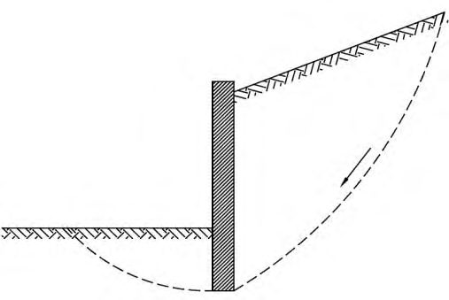
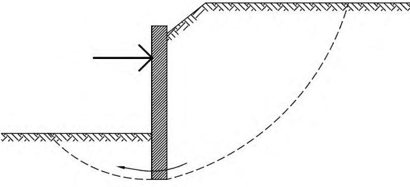
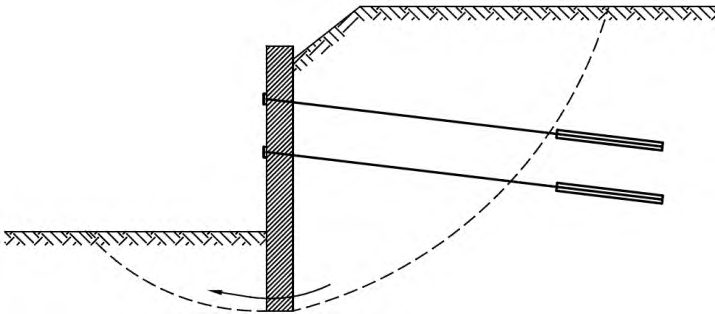
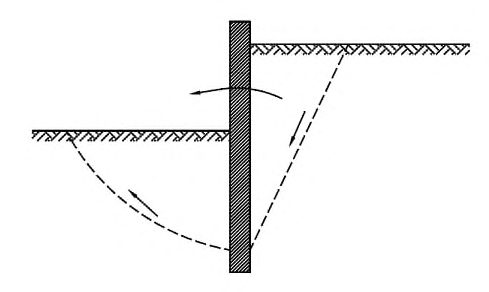
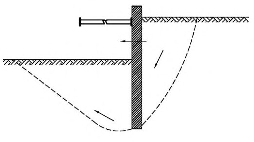
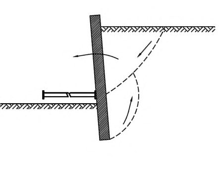
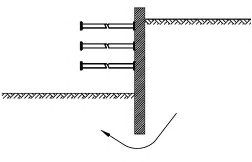
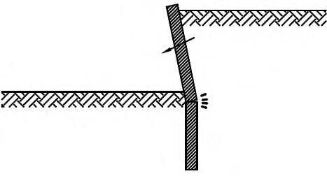
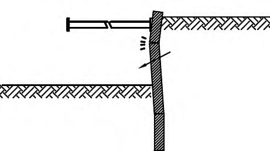

СП 248.1325800.2016 «Сооружения подземные. Правила проектирования»
О документе: разработчики, утверждение, регистрация, ключевые слова
1 ИСПОЛНИТЕЛЬ -Научно-исследовательский, проектно-изыскательский и конструкторско-технологический институт оснований и подземных сооружений им. Н.М. Герсеванова (НИИОСП им. Н.М. Герсеванова) - институт АО «НИЦ «Строительство».
2 ВНЕСЕН Техническим комитетом по стандартизации ТК 465 «Строительство»
3 ПОДГОТОВЛЕН к утверждению Департаментом градостроительной деятельности и архитектуры Министерства строительства и жилищно-коммунального хозяйства Российской Федерации (Минстрой России)
4 УТВЕРЖДЕН приказом Министерства строительства и жилищно-коммунального хозяйства Российской Федерации от 16 июня 2016 г. № 416/пр и введен в действие с 01 сентября 2016 г.
5 ЗАРЕГИСТРИРОВАН Федеральным агентством по техническому регулированию и метрологии (Росстандарт)
6 ВВЕДЕН ВПЕРВЫЕ
В случае пересмотра (замены) или отмены настоящего свода правил соответствующее уведомление будет опубликовано в установленном порядке. Соответствующая информация, уведомление и тексты размещаются также в информационной системе общего пользования - на официальном сайте разработчика (Минстрой России) в сети Интернет
© Минстрой России, 2016
Настоящий нормативный документ не может быть полностью или частично воспроизведен, тиражирован и распространен в качестве официального издания на территории Российской Федерации без разрешения Минстроя России
Дата введения - 01.09.2016 г.
и
УДК 624.134.4:624.1 ОКС \_\_\_\_\_\_\_\_\_\_
Ключевые слова: подземные сооружения, проектирование, расчет, котлованы, тоннели, грунты, геологические условия, влияние на застройку
ОРГАНИЗАЦИЯ\_РАЗРАБОТЧИК
АО «НИЦ «Строительство»
| Заместитель генерального директора по науке НИЦ «Строительство» | А.И. Звездов | |
|---|---|---|
| Руководители разработки | Директор НИИОСП | В.П. Петрухин |
| Директор НИИОСП | И.В. Колыбин | |
| Ответственный исполнитель | Зам. директора НИИОСП | Д.Е. Разводовский |
| Исполнители | Зам. директора НИИОСП | О.А. Шулятьев |
| Исполнители | Зав. лабораторией НИИОСП | А.В. Скориков |
| Исполнители | Зав. лабораторией НИИОСП | В.Г.Федоровский |
| Исполнители | Зав. лабораторией НИИОСП | В.И. Шейнин |
| Исполнители | Зам. зав. лаб. НИИОСП | О.А. Мозгачева |
| Исполнители | Ведущ. науч. сотр. НИИОСП | О.И. Игнатова |
| Исполнители | Старший науч. сотр. НИИОСП | В.В. Астряб |
| Исполнители | Старший науч. сотр. НИИОСП | М.М. Кузнецов |
| Исполнители | Зав. лабораторией НИИОСП | В.А. Китайкин |
| Исполнители | Ведущ. инженер НИИОСП | Р.И. Чернов |
Введение
Настоящий свод правил разработан с учетом обязательных требований, установленных в Федеральном законе от 27 декабря 2002 г. № 184-ФЗ «О техническом регулировании», Федеральном законе от 29 декабря 2004 г. № 190-ФЗ «Градостроительный кодекс Российской Федерации», Федеральном законе от 30 декабря 2009 г. № 384-ФЗ «Технический регламент о безопасности зданий и сооружений» и содержит основные геотехнические требования, которые следует соблюдать при проектировании, реконструкции, капитальном ремонте подземных сооружений различного назначения, а также заглубленных частей зданий.
Свод правил выполнен авторским коллективом НИИОСП им. Н.М.Герсеванова институтом АО «НИЦ «Строительство» (д-р техн. наук В.П. Петрухин , канд. техн. наук И.В. Колыбин - руководители темы; канд. техн. наук Д.Е. Разводовский - отв. исполнитель; д-р техн. наук В.И. Шейнин ; канд. техн. наук В.В. Астряб, канд. техн. наук О.И. Игнатова, канд. техн. наук А.В. Скориков, канд. техн. наук В.Г.Федоровский, канд. техн. наук О.А. Шулятьев; инженеры: В.А. Китайкин , М.М. Кузнецов, О.А. Мозгачева, Р.И. Чернов ).
Underground structures. Design principles
| [1] | Федеральный закон от 29 декабря 2004 г. №190-ФЗ | Градостроительный кодекс Российской Федерации |
|---|---|---|
| [2] | СТО 36554501-020-2010 | Деформационные и прочностные характеристики юрских глинистых грунтов Москвы |
| [3] | СТО 36554501-008-2007 | Обеспечение сохранности подземных водонесущих коммуникаций при строительстве (реконструкции) подземных и заглубленных объектов |
| [4] | СНиП 12-04-2002 | Безопасность труда в строительстве. Часть 2. Строительное производство |
| [5] | СТО 36554501-017-2009 | Проектирование и устройство монолитной конструкции, возводимой способом «стена в грунте» |
| [6] | СП 32-105-2004 | Метрополитены |
| [7] | ВСН 189-78 | Инструкция по проектированию и производству работ по искусственному замораживанию грунтов при строительстве метрополитенов и тоннелей |
| [8] | СТО 36554501-007-2006 | Проектирование и устройство вертикального или наклонного геотехнического барьера методом компенсационного нагнетания |
1Область применения
Настоящий свод правил устанавливает основные геотехнические требования и распространяется на проектирование новых и реконструируемых подземных сооружений и заглубленных частей зданий (далее - подземные сооружения).
Настоящий свод правил не распространяется на проектирование магистральных трубопроводов, могильников для захоронения, сооружений специального назначения, а также сооружений, возводимых на многолетнемерзлых грунтах.
2Нормативные ссылки
В настоящем своде правил использованы нормативные ссылки на следующие документы:
ГОСТ 20522-2012 Грунты. Методы статистической обработки результатов испытаний
ГОСТ 24846-2012 Грунты. Методы измерения деформаций оснований зданий и сооружений
ГОСТ 25100-2011 Грунты. Классификация
ГОСТ 27751-2014 Надежность строительных конструкций и оснований. Основные положения
ГОСТ 30416-2012 Грунты. Лабораторные испытания. Общие положения
ГОСТ 30672-2012 Грунты. Полевые испытания. Общие положения
ГОСТ 31937-2011 Здания и сооружения. Правила обследования и мониторинга технического состояния
СП 16.13330.2011 «СНиП II-23-81* Стальные конструкции» (с изменением № 1)
СП 20.13330.2011 «СНиП 2.01.07-85* Нагрузки и воздействия»
СП 21.13330.2012 «СНиП 2.01.09-91 Здания и сооружения на подрабатываемых территориях и просадочных грунтах»
\_\_\_\_\_\_\_\_\_\_\_\_\_\_\_\_\_\_\_\_\_\_\_\_\_\_\_\_\_\_\_\_\_\_\_\_\_\_\_\_\_\_\_\_\_\_\_\_\_\_\_\_\_\_\_\_\_\_\_\_\_\_\_\_\_\_\_\_\_\_\_\_
СП 22.13330.2011 «СНиП 2.02.01-83* Основания зданий и сооружений»
СП 23.13330.2011 «СНиП 2.02.02-85 Основания гидротехнических сооружений»
СП 24.13330.2011 «СНиП 2.02.03-85 Свайные фундаменты»
СП 28.13330.2012 «СНиП 2.03.11-85 Защита строительных конструкций от коррозии» (с изменением № 1)
СП 35.13330.2011 «СНиП 2.05.03-84* Мосты и трубы»
СП 43.13330.2012 «СНиП 2.09.03-85 Сооружения промышленных предприятий»
СП 45.13330.2010 «СНиП 3.02.01-87 Земляные сооружения, основания и фундаменты»
СП 47.13330.2012 «СНиП 11-02-96 Инженерные изыскания для строительства. Основные положения»
СП 48.13330.2011 «СНиП 12-01-2004 Организация строительства»
СП 63.13330.2010 «СНиП 52-01-2003 Бетонные и железобетонные конструкции.
Основные положения» (с изменениями № 1, № 2)
СП 91.13330.2012 «СНиП II-94-80 Подземные горные выработки»
СП 102.13330.2012 «СНиП 2.06.09-84 Туннели гидротехнические»
СП 103.13330.2012 «СНиП 2.06.14-85 Защита горных выработок от подземных и поверхностных вод»
СП 116.13330.2011 «СНиП 22-02-2003 Инженерная защита территорий, зданий и сооружений от опасных геологических процессов. Основные положения»
СП 120.13330.2012 «СНиП 32-02-2003 Метрополитены» (с изменением № 1)
СП 122.13330.2012 «СНиП 32-04-97 Тоннели железнодорожные и автодорожные»
СанПиН 2.1.7.1287-03 Санитарно-эпидемиологические требования к качеству почвы
Примечание - При пользовании настоящим сводом правил целесообразно проверить действие ссылочных стандартов и сводов правил в информационной системе общего пользования - на официальном сайте федерального органа исполнительной власти в сфере стандартизации в сети Интернет или по ежегодному информационному указателю «Национальные стандарты», который опубликован по состоянию на 1 января текущего года, и по выпускам ежемесячного информационного указателя «Национальные стандарты» за текущий год. Если заменен ссылочный документ, на который дана недатированная ссылка, то рекомендуется использовать действующую версию этого документа с учетом всех внесенных в данную версию изменений. Если заменен ссылочный документ, на который дана датированная ссылка, то рекомендуется использовать версию этого документа с указанным выше годом утверждения (принятия). Если после утверждения настоящего свода правил в ссылочный документ, на который дана датированная ссылка, внесено изменение, затрагивающее положение, на которое дана ссылка, то это положение рекомендуется применять без учета данного изменения. Если ссылочный документ отменен без замены, то положение, в котором дана ссылка на него, рекомендуется применять в части, не затрагивающей эту ссылку. Сведения о действии сводов правил целесообразно проверить в Федеральном информационном фонде технических регламентов и стандартов.
3Термины, определения и обозначения
- 3.1.1 барражный эффект
- Эффект, возникающий вследствие полного или частичного перекрытия водоносного горизонта подземным сооружением и проявляющийся в подъеме уровней подземных вод перед преградой фильтрационному потоку и их снижении за ней.
- 3.1.2 верификация
- Проверка, способ подтверждения каких-либо положений, расчетных алгоритмов, программ и процедур путем их сопоставления с опытными (эталонными или эмпирическими) данными, алгоритмами и результатами.
- 3.1.3 геотехническая категория
- Категория сложности объекта строительства, определяемая в зависимости от его уровня ответственности и сложности инженерногеологических условий площадки.
- 3.1.4геотехнический мониторинг
- Комплекс работ, основанный на натурных наблюдениях за поведением конструкций вновь возводимого или реконструируемого сооружения, его основания, в том числе грунтового массива, окружающего (вмещающего) сооружение, и конструкций сооружений окружающей застройки. Геотехнический мониторинг осуществляется в период строительства и на начальном этапе эксплуатации вновь возводимых или реконструируемых объектов.Источник: СП 22.13330.2011, пункт 12.1
- 3.1.5 геотехнический прогноз
- Комплекс работ аналитического и расчетного характера, цель которых - качественная и количественная оценка поведения оснований, фундаментов и конструкций проектируемого сооружения и окружающей застройки в процессе строительства и в начальный период эксплуатации.
- 3.1.6 гидрогеологический прогноз
- Комплекс работ расчетного характера для качественной и количественной оценки изменений гидрогеологических условий, вызванных строительством.
- 3.1.7 грунтовый анкер
- Конструктивный элемент, воспринимающий выдергивающие усилия, передаваемые на основание конструкциями, взаимодействующими с грунтом; анкер состоит, как правило, из трех частей: оголовка, свободной части и корня.
- 3.1.8 жесткость
- Мера податливости тела или материала деформациям.
- зона влияния нового строительства или реконструкции
- Расстояние, за пределами которого негативное воздействие на окружающую застройку пренебрежимо мало.Источник: СП 22.13330.2011, приложение А
- 3.1.10 извлекаемый анкер
- Грунтовый анкер, свободная часть которого подлежит извлечению после вывода анкера из работы.
- 3.1.11 инженерная цифровая модель местности; ИЦММ
- Форма представления инженерно-топографического плана в цифровом векторно-топологическом виде для обработки (моделирования) на ЭВМ и автоматизированного решения инженерных задач. ИЦММ состоит из цифровой модели рельефа (ЦМР) и цифровой модели ситуации (ЦМС). [СП 47.13330.2012, статья 3.1]
- 3.1.12 инженерно-геотехнические изыскания
- Комплекс геотехнических работ и исследований с целью получения исходных расчетных значений для проектирования фундаментов, опор и др. на участках размещения объектов капитального строительства и индивидуального проектирования, необходимых и достаточных для построения расчетной геомеханической модели взаимодействия зданий и сооружений с основанием.Источник: СП 47.13330.2012, статья 3.4
- 3.1.13 компенсационное нагнетание
- Способ защиты существующих объектов от дополнительных деформаций при возведении рядом подземных сооружений путем предотвращения или минимизации таких деформаций за счет нагнетания в грунт твердеющих растворов через инъекторы, располагаемые между строящимся и защищаемым объектами.
- 3.1.14 контактная модель
- Модель, учитывающая совместность деформаций конструкций сооружения с деформируемым основанием, в которой напряженнодеформированное состояние основания не рассматривается, а рассматривается только связь между напряжениями и перемещениями на контакте «сооружение-основание».
- 3.1.15 контактный элемент
- Конечный элемент, позволяющий моделировать как наличие, так и отсутствие совместных деформаций на контакте конструкции с грунтовым основанием.
- 3.1.16 корень анкера
- Часть грунтового анкера, обеспечивающая передачу выдергивающего усилия от сооружения на грунтовое основание вне зоны активных деформаций.
- 3.1.17 наблюдательный метод
- Метод проектирования, предполагающий возможность корректировать проект на основании результатов геотехнического мониторинга.
- 3.1.18 надзор за строительством
- Комплекс специальных мероприятий, проводимых заказчиком, проектировщиком и организацией, осуществляющей научно-техническое сопровождение и мониторинг, а также другими контролирующими государственными организациями по обеспечению безопасности строительства и последующей эксплуатации строящегося сооружения и окружающей застройки.
- 3.1.19 научно-техническое сопровождение
- Комплекс работ научно-аналитического, методического, информационного, экспертно-контрольного и организационного характера, осуществляемых в процессе изысканий, проектирования и строительства в целях обеспечения надежности сооружений с учетом применения нестандартных расчетных методов, конструктивных и технологических решений.Источник: СП 22.13330.2011, пункт 4.14
- 3.1.20 подземное сооружение или подземная часть сооружения
- Сооружение или часть сооружения, расположенная ниже уровня поверхности земли (планировки).Источник: СП 22.13330.2011, приложение А
- 3.1.21 поэтапные (постадийные) расчеты
- Последовательные численные расчеты, выполняемые по деформированной схеме сооружения, учитывающие реальную стадийность и очередность возведения сооружения, влияющие на напряженно-деформированное состояние подземного сооружения и основания.
- 3.1.22 предписывающие мероприятия
- Предписания, т. е. требования и указания нормативных документов нерасчетного характера, применяемые при проектировании для исключения достижения предельных состояний и применяемые в тех случаях, когда расчетные модели не нужны или отсутствуют; применяются преимущественно при проектировании сооружений 1-й геотехнической категории.
- 3.1.23 прогрессирующее разрушение (обрушение)
- Распространение начального локального повреждения конструктивного элемента в виде цепной реакции от элемента к элементу, приводящее в конечном итоге к обрушению всего сооружения или значительной его части. Примечание - В расчетах на аварийные воздействия верхнего строения применяют термин «обрушение», в то время как по отношению к расчетам подземных сооружений применяют термин «разрушение» .
- 3.1.24 проектная ситуация
- Учитываемый при проектировании и расчете сооружения комплекс наиболее неблагоприятных условий, которые могут возникнуть при его возведении и эксплуатации.
- 3.1.25 проектный сценарий
- Учитываемый при проектировании и расчете сооружения комплекс наиболее неблагоприятных последовательностей изменения взаимосвязанных проектных ситуаций, которые могут возникнуть при его возведении и эксплуатации.
- 3.1.26 сопоставимый опыт
- Документированная либо иная четко установленная информация, относящаяся к свойствам дисперсных и скальных грунтов, аналогичных рассматриваемым в проекте, для которых следует ожидать сходного поведения конструкций, аналогичных используемым в проекте.
- 3.1.27 сопротивление воздействию
- Способность элемента или поперечного сечения элемента сооружения выдерживать воздействия без механических повреждений.
- 3.1.28 характерные значения
- Расчетные значения механических характеристик грунта, являющихся зависимыми от вида напряженно-деформированного состояния и уровня напряжений, полученные методом, наиболее соответствующим применяемым при проектировании моделям и методам расчета.
- 3.1.29 чувствительность грунта
- Способность грунта изменять свои свойства при изменении напряженного состояния, климатических условий или прочих воздействиях.
- 3.1.30 чувствительность модели
- Способность расчетной модели реагировать на определенное малое изменение или воздействие, а также количественная характеристика этой способности. В настоящем своде правил применены обозначения, приведенные в 3.2.1-3.2.4. a - по сопротивлению для анкеров; a,t - по сопротивлению материала тяги анкера; γ n - по ответственности сооружений; γ f - по нагрузке; γ m - по материалу конструкций; γ g - по грунту; ``` γ g , с ʹ - по грунту для эффективного сцепления; γ g , cu - по грунту для недренированной прочности; γ g ,φʹ - по грунту для угла внутреннего трения (tg φʹ); γ g ,ρ - по грунту для плотности; γ g , Rс - по грунту для сопротивления одноосному сжатию; γ d - коэффициент условий работы; γ Е - для воздействия; γ R - по сопротивлению; γ Rd - модели для сопротивления; γ Sd - модели для результатов воздействий; st - устойчивости. 3.2.2 Характеристики грунтов Xn - нормативные значения характеристик грунтов; Xd - расчетные значения характеристик грунтов; c ʹ - удельное сцепление грунта при эффективных напряжениях; сʹ I - удельное сцепление грунта при эффективных напряжениях для группы (ULS); cu - прочность грунта при недренированном сдвиге; сu I - прочность грунта при недренированном сдвиге для группы (ULS); Rс - сопротивление одноосному сжатию; γI - расчетное значение удельного веса грунта для группы (ULS); φʹ - угол внутреннего трения грунта при эффективных напряжениях; φ ʹ I - расчетное значение угла внутреннего трения грунта для группы (ULS); ρ - плотность грунта/ 3.2.3 Геометрические характеристики, воздействия и сопротивления ad - проектные значения геометрических параметров; Сd - предельное значение для результата воздействия; Ed - расчетное значение результата воздействия; Fd - расчетное значение нагрузки или воздействия; Fn - нормативное значение нагрузки или воздействия; Gstb , d - расчетное значение удерживающей нагрузки; Gʹstb , d - расчетное значение веса элемента грунта во взвешенном состоянии; Gstb , c - нормативное значение постоянной удерживающей нагрузки, Gstb , t - нормативное значение длительной удерживающей нагрузки, Md - расчетное значение характеристики материала; Mn - нормативное значение характеристики материала; ``` Pd - расчетная нагрузка на анкер; Ra , d - расчетное значение сопротивления выдергиванию анкера; Ra , k - нормативное значение сопротивления выдергиванию анкера; Rd - расчетное значение сопротивления воздействию; Rt , d - расчетная прочность тяги анкера на разрыв; Rstb - нормативное значение силы сопротивления всплытию, Sdst , d - расчетное значение фильтрационной силы в элементе грунта; Td - расчетное значение предельного сопротивления; Vdst , d - расчетное значение дестабилизирующего направленного вверх воздействия; udst , d - расчетное значение дестабилизирующего полного порового давления; Ψ - коэффициент сочетаний нагрузок; σstb - удерживающее полное напряжение. 3.2.4 Предельные состояния EQU - потеря устойчивости или равновесия; EXD - аварийные предельные состояния; GEO - разрушение основания или его чрезмерные деформации, приводящие к разрушению конструкций; HYD - гидравлическое разрушение основания; SLS - вторая группа предельных состояний; STR - внутреннее разрушение сооружения или его элементов; ULS - первая группа предельных состояний; UPL - потеря равновесия сооружением или основанием в результате направленных вверх воздействий.
4Общие положения
- обеспечивающие надежность, долговечность и экономичность на всех стадиях строительства и эксплуатации сооружений;
- не допускающие ухудшения условий эксплуатации существующих зданий, сооружений и инженерных коммуникаций (далее - окружающая застройка);
- не допускающие вредных воздействий на экологическую среду;
- допускающие перспективное применение подземного пространства города.
При проектировании следует учитывать:
- вибрационные воздействия от транспорта и метрополитена
;
- необходимость сноса старых строений на площадках строительства;
- необходимость разборки старых подземных сооружений и фундаментов;
- необходимость ремонта, выноса и перекладки подземных коммуникаций;
- возможность аварийных утечек из водонесущих подземных коммуникаций ;
- необходимость проведения археологических изысканий;
- необходимость реконструкции окружающей застройки;
- перспективное использование подземного пространства на близлежащих участках.
5Номенклатура подземных сооружений. Геотехнические категории
- гражданские сооружения жилого, административного назначения и сферы обслуживания, спортивные сооружения;
- сооружения промышленного назначения;
- транспортные сооружения и пешеходные переходы;
- гидротехнические сооружения;
- инженерные сооружения и сети;
- многофункциональные комплексы.
- в пониженных формах рельефа с помощью обратной засыпки;
- открытым или полузакрытым способом в котлованах и траншеях;
- закрытым способом.
В том случае, если строительство или эксплуатация подземного сооружения оказывают влияние на существующее здание или сооружение более высокого уровня ответственности, для конструктивных разделов проекта уровень ответственности проектируемого подземного сооружения следует принимать соответствующим уровню ответственности объекта окружающей застройки, подверженного влиянию.
Категорию сложности инженерно-геологических условий строительства следует определять в соответствии с СП 47.13330.
Для назначения требований к инженерным изысканиям и геотехническим разделам проекта подземного сооружения устанавливают три геотехнические категории: 1-я (простая), 2-я (средней сложности), 3-я (сложная).
Геотехническую категорию подземного сооружения следует устанавливать в соответствии с таблицей 5.1.
Таблица 5.1
| Категория сложности инженерно-геологических условий (СП 47.13330) | Геотехническая категория при уровне ответственности подземных сооружений (5.5) | Геотехническая категория при уровне ответственности подземных сооружений (5.5) | Геотехническая категория при уровне ответственности подземных сооружений (5.5) |
|---|---|---|---|
| Категория сложности инженерно-геологических условий (СП 47.13330) | КС-3 (повышенный) | КС-2 (нормальный) | КС-1 (пониженный) |
| I (простая) | 2 | 2 | 1 |
| II (средняя) | 3 | 2 | 1 |
| III (сложная) | 3 | 3 | 2 |
Примечания
1 К 1-й геотехнической категории относятся небольшие и относительно простые сооружения, в частности котлованы, траншеи и выработки в грунте глубиной не более 2 м, устраиваемые выше уровня подземных вод.
2 Ко 2-й геотехнической категории относится большинство подземных сооружений в тех случаях, когда для подобных сооружений имеется сопоставимый опыт, на площадке отсутствуют неблагоприятные природные и техногенные процессы, а также специфические и структурно-неустойчивые грунты.
3 3-я геотехническая категория включает в себя: сложные подземные сооружения, для которых отсутствует сопоставимый опыт проектирования; подземные части высотных и уникальных зданий; особо опасные сооружения, находящиеся в сложных инженерно-геологических условиях; сооружения, на площадках которых развиваются неблагоприятные природные и техногенные процессы.
Для линейных подземных сооружений или сооружений комплексов (например, включающих в себя различные по сложности части или участки; с существенно разными глубиной заложения, инженерно-геологическими условиями или градостроительной ситуацией) допускается назначать различную геотехническую категорию для отдельных частей.
Для проектирования сооружений 2-й геотехнической категории, как правило, целесообразно применять результаты стандартных полевых и лабораторных методов исследований свойств грунтов, а также стандартные методы расчета, конструирования и производства работ.
При проектировании таких сооружений могут потребоваться дополнительные исследования свойств грунтов, выполняемые по специально разрабатываемым программам, нестандартные полевые исследования, испытания опытных образцов материалов и конструкций, апробация новых технологий специальных работ на опытных площадках и пр. Также могут быть применены нестандартные методы расчета, специальные модели поведения грунта. Методы выполнения геотехнического мониторинга могут быть расширены по сравнению с требованиями настоящего свода правил.
Для сооружений 3-й геотехнической категории следует предусматривать научнотехническое сопровождение проектирования и строительства в соответствии с указаниями СП 22.13330.
6Исходные данные для проектирования и требования к инженерным изысканиям
- отчеты об инженерных изысканиях (инженерно-геодезических, инженерногеологических, инженерно-геотехнических, инженерно-экологических);
- инженерная цифровая модель местности с отображением подземных и надземных сооружений и коммуникаций;
- отчеты о техническом обследовании эксплуатируемых зданий и сооружений окружающей застройки в зоне влияния строительства;
- проекты строящихся зданий и сооружений в зоне влияния строительства;
- результаты стационарных наблюдений и мониторинга (при строительстве на территориях с проявлениями опасных геологических и инженерно-геологических процессов);
- технические условия, разработанные всеми уполномоченными заинтересованными организациями.
Результаты инженерных изысканий и ИЦММ допускается применять без актуализации при сроке давности их выполнения, не превышающем трех лет. Для подземных сооружений мелкого заложения рекомендуется применять цифровую модель ситуации, являющуюся составной частью ИЦММ, без ее актуализации, сроком давности не более одного года.
Результаты технического обследования зданий и сооружений допускается применять при сроке давности выполнения обследования, не превышающем трех лет для сооружений с категорией технического состояния I (нормальное или нормативное) или II (удовлетворительное или работоспособное) и не превышающем двух лет для сооружений категории III (неудовлетворительное или ограниченно-работоспособное) или IV (предаварийное или аварийное). Для актуализации ранее выполненных результатов обследований следует повторно определять категорию технического состояния сооружений.
Примечания
1 Категории технического состояния сооружений приведены в соответствии с указаниями СП 22.13330 и ГОСТ 31937.
2 Для надземных зданий и сооружений промышленного и гражданского назначения следует применять классификацию категории технического состояния по ГОСТ 31937, для прочих - согласно СП 22.13330.
Наименование грунтов и их классификационные характеристики, приводимые в отчетах об инженерно-геологических и инженерно-геотехнических изысканиях, следует принимать по ГОСТ 25100.
Техническое задание и программу инженерно-геологических и инженерногеотехнических изысканий следует составлять с учетом СП 22.13330, СП 23.13330, СП 24.13330, СП 91.13330, СП 102.13330, СП 120.13330, СП 122.13330.
При составлении программы и проведении изысканий необходимо учитывать геотехническую категорию объекта строительства, в зависимости от которой следует назначать объемы и методы исследований.
Примечание - Выбор методов полевых и лабораторных методов исследования свойств грунтов должен во многом определяться применяемыми геотехническими моделями и методами расчета и в силу этого оставаться в компетенции проектировщика.
Для подземных сооружений в зависимости от их особенностей при полевых и лабораторных исследованиях физико-механических свойств грунтов и скальных массивов по специальному заданию целесообразно определять дополнительные специфические характеристики, необходимые для расчетов оснований сооружений и их конструкций, и комплексно применять геофизические и другие методы.
Статистическую обработку результатов определений следует выполнять в соответствии с ГОСТ 20522 раздельно для каждого метода испытаний. В отчете об изысканиях должно быть обязательно указано, каким способом получены те или иные значения.
Примечание - Следует учитывать, что различные методы испытаний позволяют получить различные значения механических характеристик грунта в зависимости от вида напряженно-деформированного состояния и уровня напряжений. В связи с этим окончательный выбор значений характеристик грунта должен осуществлять проектировщик в зависимости от применяемых моделей и методов расчета.
Примечание - В качестве примера региональных рекомендаций и таблиц, отражающих местные грунтовые условия, см. стандарт организации [2].
Примечание - Характеристики дренированной ( tg φʹ, c ʹ) и недренированной прочности ( cu ) грунта применяют при анализе долговременных и кратковременных расчетных ситуаций соответственно.
Примечание - При оценке качества и свойств скальных и полускальных грунтов необходимо проводить различие между поведением грунта при испытаниях ненарушенных образцов и поведением значительно больших по размерам скальных массивов, которые включают в себя структурные разрывы сплошности, напластования, трещины, зоны сдвигов и пустоты выщелачивания и в силу этого могут характеризоваться значительно более низкими интегральными механическими свойствами.
7Основные принципы проектирования
7.1Общие указания
Примечания
1 Проектные сценарии следует рассматривать, например, при выполнении всех видов поэтапных (постадийных) расчетов.
2 В геотехническом проектировании различие между кратковременной проектной ситуацией и длительной заключается преимущественно в наличии или отсутствии избыточного порового давления в грунте.
- применения расчетов в соответствии с 7.4 и разделом 8;
- назначения предписывающих мероприятий в соответствии с 7.5;
- применения экспериментальных моделей и натурных испытаний в соответствии с 7.6;
- применения наблюдательного метода в соответствии с 7.7.
Примечание - Результаты проверки предельных состояний по возможности следует сравнивать с сопоставимыми опытными данными.
При оценке долговечности материалов, применяемых в подземных конструкциях, следует учесть возможность наличия агрессивных веществ в подземных водах и грунте, электрохимической коррозии, влияния грибков и аэробных бактерий в присутствии кислорода, влияния температурных воздействий и пр.
Обеспечение требований по долговечности следует выполнять в соответствии с указаниями СП 28.13330.
7.2Предельные состояния
- первая группа предельных состояний (ULS) - состояния строительных объектов, достижение которых ведет к потере несущей способности строительных конструкций или основания, к невозможности эксплуатации сооружения;
- вторая группа предельных состояний (SLS) - состояния, при достижении которых нарушается нормальная эксплуатация сооружений, исчерпывается ресурс долговечности конструкций, нарушаются условия комфортности.
- потерю устойчивости (равновесия) сооружением и основанием, которые рассматриваются как жесткое тело, при недостаточном сопротивлении конструктивных материалов и грунтов основания для обеспечения равновесия (EQU);
- внутреннее разрушение сооружения или его конструктивных элементов, т. е. ситуации, в которых прочность конструктивных элементов важна для обеспечения сопротивления (STR);
- разрушение или чрезмерные деформации основания, т. е. ситуации, в которых прочность грунта важна для обеспечения сопротивления (GEO);
- потерю равновесия сооружением или основанием из-за увеличения давления воды (взвешивания) или иными направленными вверх воздействиями (UPL);
- гидравлический подъем в основании, внутреннюю суффозию и прочие явления, связанные с наличием гидравлических градиентов (HYD).
К первой группе предельных состояний относятся также аварийные предельные состояния - специфические предельные состояния, отнесенные ГОСТ 27751 к особым предельным состояниям.
Аварийные предельные состояния - состояния возникающие при аварийных воздействиях и ситуациях, имеющих малую вероятность появления и форс-мажорный характер, достижение которых приводит к разрушению с катастрофическим последствиями (EXD).
Примечание - Примеры аварийных предельных состояний: выход из строя конструктивного элемента подземного сооружения в результате взрыва, пожара, террористического акта; аварийный прорыв напорной водонесущей коммуникации и пр.
- достижение предельных деформаций конструкций подземного сооружения или основания, устанавливаемых исходя из конструктивных, технологических или эстетикопсихологических требований;
- образование трещин, не нарушающих нормальную эксплуатацию объекта, или достижение предельной ширины раскрытия трещин;
- достижение предельных деформаций окружающей застройки, расположенной в зоне влияния;
- недопустимые уровни вибрационных воздействий;
- недопустимое влияние на гидрогеологические и экологические условия;
- прочие явления, при которых возникает необходимость ограничения во времени эксплуатации подземного сооружения (например, коррозионные повреждения).
7.3Коэффициенты надежности
Примечания
1 В ряде случаев коэффициенты условий работы могут представлять собой комбинацию с коэффициентами надежности по сопротивлению γ Rd .
2 В численных моделях для определения расчетного значения сопротивления воздействию Rd или расчетного значения результата воздействий Ed могут вводиться коэффициенты модели γ Rd и γ Sd соответственно, чтобы результаты проектной модели отклонялись в сторону запаса надежности (8.6.3).
Примечание - Например значения частных коэффициентов надежности по грунту, применяемые к сдвиговой прочности грунта, различны для внутреннего трения и сцепления.
7.4Проектирование с применением расчетов
В первую очередь следует выполнять расчеты для предельных состояний, которые определяют основные конструктивные решения и геометрические характеристики подземного сооружения или его элементов. Невозможность наступления прочих предельных состояний следует подтверждать расчетными проверками.
7.5Проектирование по предписаниям
Примечание - Проектирование исключительно по предписаниям допускается только для подземных сооружений 1-й геотехнической категории.
7.6Применение экспериментальных моделей и натурных испытаний
- различие грунтовых условий при испытаниях и на строительной площадке проектируемого объекта;
- временныʹе эффекты, особенно в тех случаях, когда продолжительность испытаний намного меньше, чем продолжительность нагружения реальных конструкций;
- масштабные эффекты, особенно в случае применения малых моделей.
Примечания
1 Условия могут считаться подобными, если соблюдаются критерии подобия.
2 При испытаниях маломасштабных моделей для задач, в которых объемные силы, такие как, удельный вес грунта или удельное сцепление, играют важную роль, для соблюдения критериев подобия рекомендуется применять центробежное моделирование.
7.7Наблюдательный метод
- выполнить предварительный расчетный прогноз;
- установить контролируемые критерии и характеристики;
- установить допустимые пределы контролируемых характеристик;
- оценить возможный диапазон этих характеристик и удостовериться, что с приемлемой вероятностью реальные характеристики будут находиться в допустимых пределах;
- разработать программу контроля (мониторинга) изменения выбранных характеристик;
- убедиться, что время реакции измерительных систем мониторинга и процедуры обработки и анализа результатов занимают достаточно мало времени по отношению к ожидаемой скорости развития ситуации на площадке для принятия своевременных действий;
- разработать план мероприятий, которые следует применить в случае превышения контролируемыми характеристиками допустимых пределов.
Мониторинг на площадке должен однозначно устанавливать, находятся ли контролируемые характеристики в допустимых пределах. Он должен выполняться с начальной стадии строительства, с регулярностью, позволяющей предпринять необходимые действия в случае превышения допустимых пределов.
8Требования к расчетным методам и моделям
8.1Общие указания
- нагрузки и воздействия, а также их сочетания;
- свойства материалов конструкций;
- свойства грунтов и массивов скальных грунтов;
- геометрические данные;
- предельные значения деформаций, раскрытия трещин, вибраций и пр.;
- расчетные модели, устанавливающие связь результатов расчета с исходными данными.
При необходимости расчетная модель может включать в себя упрощения. Упрощения, как правило, следует вводить по отношению к учету менее существенных факторов, а также факторов, обладающих значительной степенью неопределенности. Упрощения следует учитывать с помощью частных коэффициентов надежности.
Примечание - При выборе уровня сложности расчетной модели следует учитывать объем информации об инженерно-геологических условиях и свойствах грунтов. Знания инженерно-геологических условий площадки, зависящие от качества инженерных изысканий, обычно оказываются более важными для выполнения фундаментальных требований проектирования, чем сложность расчетных моделей.
- аналитической;
- полуэмпирической;
- численной.
Численные модели, преимущественно применяемые для расчета подземных сооружений, подразделяются на контактные модели и модели сплошной среды.
Контактные модели учитывают взаимодействие конструкций сооружения с основанием на контакте «сооружение-грунт», однако напряженно-деформированное состояние массива грунта не рассматривается.
В моделях сплошной среды рассматриваются подземное сооружение и окружающий массив грунта в пределах расчетной области и анализируется их совместное напряженнодеформированное состояние.
8.2Нагрузки и воздействия
Нагрузки и воздействия на основание, подземное сооружение или его отдельные конструктивные элементы, коэффициенты надежности по нагрузке, а также возможные сочетания нагрузок и коэффициенты сочетаний следует принимать согласно требованиям СП 20.13330, СП 22.13330, СП 23.13330, СП 35.13330, СП 91.13330, СП 102.13330, СП 120.13330, СП 122.13330 и настоящего свода правил.
- вес конструкций сооружения;
- вес грунта засыпки;
- вес зданий и сооружений, находящихся в зоне их воздействия на подземное сооружение;
- давление грунта и напряжения в основании в долговременных ситуациях;
- давление подземных вод и фильтрационные силы при установившемся режиме;
- усилия предварительного напряжения в постоянных конструкциях и пр.
К временным длительным нагрузкам и воздействиям относят:
- вес стационарного оборудования;
- давление грунта и напряжения в основании в кратковременных ситуациях;
- снятие нагрузки при выемке грунта;
- давление подземных вод и фильтрационные силы при неустановившемся режиме, избыточное поровое давление;
- давление воды внутри подземного сооружения;
- вибрационные воздействия от оборудования и транспорта;
- нагрузки от складируемых на поверхности грунта материалов;
- температурные воздействия в период эксплуатации, включая температурные воздействия от транспортируемых жидкостей и газов;
- усилия во временных анкерах и распорных конструкциях;
- нагрузки, обусловленные изменением влажности, усадкой и ползучестью материалов;
- силы морозного пучения грунта;
- деформации основания, вызванные подработкой или устройством котлованов;
- деформации основания, вызванные ухудшением свойств грунта и не сопровождающиеся коренным изменением структуры грунта;
- отрицательное трение и пр.
К кратковременным нагрузкам и воздействиям относят:
- транспортные нагрузки в пределах подземного сооружения;
- давление грунта, вызванное транспортными нагрузками на земной поверхности;
- нагрузки и воздействия в процессе сооружения тоннеля: давление щитовых домкратов, усилия от веса и воздействия проходческого и другого строительного оборудования;
- давление пульсации потока и гидравлического удара в водонесущих сооружениях;
- давление растворов при цементации;
- температурно-климатические воздействия в период строительства и пр.
К особым нагрузкам и воздействиям относят:
- воздействия, обусловленные опасными инженерно-геологическими процессами;
- воздействия, обусловленные деформациями основания и сопровождающиеся коренным изменением структуры грунта, например при просадках и набухании грунтов;
- взрывные воздействия;
- аварийные нагрузки и воздействия.
Примечание - В зависимости от рассматриваемого предельного состояния, а также проектной ситуации (долговременной или кратковременной) некоторые временные длительные нагрузки могут быть отнесены к кратковременным и наоборот.
Fd
где γ f - частный коэффициент надежности по нагрузке;
- - коэффициент сочетаний нагрузок, определяемый в соответствии с ГОСТ 27751, СП 20.13330 и СП 23.13330;
Fn - нормативное значение данной нагрузки или воздействия.
- Примечание - Примером может служить собственный вес сооружения при его расчете на всплытие (UPL).
В особых сочетаниях коэффициенты надежности γ f для постоянных и длительных нагрузок следует принимать равными единице, а кратковременные нагрузки допускается не учитывать, если в нормах проектирования отдельных видов подземных сооружений не оговаривается иное.
В расчетах по второй группе предельных состояний коэффициенты надежности γ f следует принимать равными единице.
8.3Характеристики конструкционных материалов
8.4Характеристики грунтов
Как правило, в расчетах применяют следующие частные коэффициенты надежности по грунту, значения которых отличны от 1,0: γ g , с ʹ - для эффективного сцепления с ʹ; γ g , cu - для недренированной прочности cu ; γ g ,φʹ - для угла внутреннего трения, используется: ( tg φʹ n )/γ g ,φʹ ; γ g ,ρ - для плотности грунта ρ; γ g , Rс - для сопротивления одноосному сжатию Rс .
Примечание - Помимо указанных, допускается применять частные коэффициенты надежности и для других характеристик, определяющих прочность, деформируемость и сопротивление грунта.
Xd
где Xn - нормативное значение данной характеристики.
Коэффициент надежности по грунту γ g устанавливают в зависимости от изменчивости характеристик, числа определений и требуемой доверительной вероятности.
Примечания
1 Снижение расчетных значений характеристик грунтов по отношению к их нормативным значениям может как повышать, так и понижать надежность. Например, вес грунта (плотность) является благоприятным фактором при расчете на всплытие подземного сооружения или несущей способности фундамента и неблагоприятным при определении активного давления грунта. В ряде случаев расчетные значения характеристик грунта должны быть определены с двусторонней доверительной вероятностью, а в качестве расчетных приняты значения, повышающие надежность проектного решения.
2 При проверке ряда предельных состояний EQU и GEO вес грунта является как воздействием, так и удерживающим фактором, в силу этого неочевидно, какое расчетное значение плотности грунта должно быть принято в запас надежности. Особенно это характерно для численных моделей. В таких случаях следует для плотности грунта ρ принимать γ g ,ρ = 1,0, для веса грунта γ f = 1,0 и, при необходимости, применять коэффициенты надежности модели γ Rd и γ Sd .
В расчетах следует применять характерные расчетные значения механических характеристик грунтов и скальных массивов, полученные в полевых или лабораторных условиях методом, наиболее соответствующим применяемой расчетной модели.
Примечание - Характерные расчетные значения механических характеристик грунтов допускается корректировать на основании сопоставимого опыта.
8.5Геометрические параметры
где значения a определяют на основании разделов 11-14.
Примечание - Необходимость учета вариаций геометрических параметров может быть связана, например, с возможностью избыточной экскавации в котловане, существенными эксцентриситетами при выполнении скрытых работ и пр.
8.6Расчет по первой группе предельных состояний
В общем случае невозможность наступления предельных состояний первой группы для конструкции, взаимодействующей с основанием, следует проверять с помощью неравенства
а для элемента такой конструкции - с помощью
где Ed - расчетное значение результата воздействия;
Rd - расчетное значение сопротивления воздействию; γ n , γ f , γ m , γ g , γ d - частные коэффициенты надежности по ответственности, нагрузке, материалу, грунту, условий работы в соответствии с 7.3.3;
Fn , Mn , Xn - нормативные значения воздействий, характеристик материалов и грунтов в соответствии с 8.2-8.4;
- коэффициенты сочетания нагрузок; ad - проектные значения геометрических параметров (8.5).
Примечание - Формулы (8.4) и (8.4а) включают в себя отношение Xn /γ g в расчет не только сопротивлений, но и воздействий, поскольку свойства грунтов могут в некоторых случаях влиять на значения геотехнических воздействий.
Для жесткого тела или его фрагмента допускается рассматривать соблюдение условий равновесия: γ
где Edst , d -расчетное значение равнодействующей результата дестабилизирующих (сдвигающих, опрокидывающих и др.) воздействий;
Estb , d -расчетное значение равнодействующей результата стабилизирующих (удерживающих) воздействий;
Td - расчетное значение равнодействующей предельных сопротивлений.
Примечания
1 Проверка EQU, как правило, является второстепенной при проектировании подземных сооружений. Ее следует применять, например, для проверки возможности сдвига или поворота одной части сооружения относительно другой.
2 Не следует смешивать данную проверку равновесия с расчетом общей устойчивости и несущей способности основания или расчетом сооружения на всплытие.
В практике проектирования допускается применять несколько подходов, различающихся применением в неравенствах (8.4) и (8.4а) специфичных наборов частных коэффициентов надежности, в зависимости от рассматриваемых проектных ситуаций и применяемых расчетных моделей.
Для проектных ситуаций, в которых результаты воздействий не зависят или незначительно зависят от характеристик грунтов, допускается в расчетах рассматривать:
Ed
Ed
где γ Е - частный коэффициент надежности для воздействия, γ Sd - частный коэффициент модели для результатов воздействий, учитывающий неопределенность при их моделировании.
Для разных проектных ситуаций, расчетные значения сопротивления воздействиям могут как зависеть, так и не зависеть, от характеристик грунтов. В расчетах допускается рассматривать:
Rd
где γ R - частный коэффициент надежности по сопротивлению, γ Rd = (γ d /γ R ) - частный коэффициент модели для сопротивления.
Для проверки предельных состояний STR и GEO рекомендуется применять один из вариантов наборов частных коэффициентов надежности таблицы 8.1 в зависимости от рассматриваемых проектных ситуаций.
Таблица 8.1
| Проектный | Проектный | Набор коэффициентов надежности | Набор коэффициентов надежности | Набор коэффициентов надежности | Набор коэффициентов надежности | Набор коэффициентов надежности | Набор коэффициентов надежности | Набор коэффициентов надежности | Пример применения |
|---|---|---|---|---|---|---|---|---|---|
| подход | подход | γ f | γ Е | γ m | γ g | γ R | γ d | γ n | Пример применения |
| 1 | А | ≠1,0 | - | 1,0 | ≠1,0 | ≠1,0 | При расчете тоннельных обделок | ||
| 1 | Б | 1,0 | ≠1,0 | 1,0 | ≠1,0 | ≠1,0 | При расчете тоннельных обделок | ||
| 2 | А | ≠1,0 | - | ≠1 | ≠1,0 | - | ≠1,0 | По ГОСТ 27751 | При расчете несущей способности и устойчивости оснований |
| 2 | Б | ≠1,0 | - | ≠1,0 | ≠1,0 | ≠1,0 | По ГОСТ 27751 | При расчете свайных фундаментов и анкеров | |
| 2 | В | ≠1,0 | - | ≠1,0 | γ Rd ≠1,0 | γ Rd ≠1,0 | По ГОСТ 27751 | При расчете свайных фундаментов и анкеров | |
| 3 | - | 1,0 | γ Sd ≠1,0 | 1,0 | - | ≠1,0 | По ГОСТ 27751 | В численных расчетах при неопределенности моделирования воздействий |
Примечания
1 Минимальные значения коэффициентов надежности по нагрузкам или для воздействий приведены в приложении Д.
2 В нормативных документах применяются различные наборы частных коэффициентов надежности в соответствии с разными проектными подходами. Пояснения к выбору частных коэффициентов надежности для применяемых проектных подходов приведены в приложении Е.
- в рассматриваемом сочетании нагрузок следует рассматривать только постоянные и длительные нагрузки совместно с аварийным воздействием;
- значения всех частных коэффициентов надежности принимают равными 1,0.
где Gstb , c - нормативное значение постоянной удерживающей нагрузки (веса);
Gstb , t - нормативное значение длительной удерживающей нагрузки (веса);
Rstb - нормативное значение силы сопротивления всплытию анкерующих элементов; γ f 1 , γ f 2, γ R - коэффициенты надежности, значения которых следует устанавливать в соответствии с СП 22.13330 и СП 24.13330, γ n - коэффициент надежности по ответственности сооружения, принимаемый равным 1,0 для кратковременных проектных ситуаций и устанавливаемый в соответствии с ГОСТ 27751 для долговременных ситуаций.
Примечание - Силы сопротивления всплытию за счет трения по контакту грунта и временных ограждений котлованов не следует учитывать при расчете на всплытие.
S
В формулах (8.10а) и (8.10б) для постоянных и временных воздействий следует применять частные коэффициенты надежности по нагрузке γ f в соответствии с таблицей 8.2.
Таблица 8.2
| Воздействие | Значение γ f |
|---|---|
| Постоянное: - неблагоприятное (дестабилизирующее) | 1,35 |
| - благоприятное (удерживающее) | 0,9 |
| Кратковременное: - неблагоприятное (дестабилизирующее) | 1,50 |
8.7Расчет по второй группе предельных состояний
Ed
где Ed - расчетное значение результата воздействия,
Сd - предельное значение, допустимое для результата воздействия.
Примечание - Значения коэффициента по ответственности сооружений γ n допускается принимать больше 1,0, если это предусмотрено в техническом задании.
Примечание - Пример кратковременной проектной ситуации, для которой требуется расчет по второй группе предельных состояний, - проверка крена подземной части высотных зданий при действии ветровых нагрузок, регламентированная СП 22.13330.
- деформационные процессы в грунтах могут быть существенно растянуты во времени в силу процессов консолидации и ползучести;
- механические характеристики грунтов могут существенно зависеть от скорости приложения нагрузок;
- вибрационные воздействия могут приводить к длительным деформациям;
- изменения уровней подземных вод могут приводить к деформациям;
- физико-механические характеристики грунтов могут изменяться в процессе эксплуатации сооружения.
- метода строительства;
- последовательности и скорости нагружения;
- изменения жесткости и конструктивной схемы подземного сооружения в процессе строительства и эксплуатации.
Примечание - Для удовлетворения этих требований следует выполнять поэтапные расчеты, учитывающие проектные сценарии.
8.8Расчетные модели
При отсутствии надежной расчетной модели для конкретного предельного состояния следует выполнять расчет с применением нескольких расчетных схем или моделей, чтобы вероятность достижения этого предельного состояния была минимальна.
Если при применении результатов расчета используют поправочный коэффициент, он должен учитывать:
- чувствительность модели, т. е. диапазон неопределенности результатов, получаемых с помощью данной расчетной модели;
- известные систематические погрешности, связанные с данным методом расчета.
Примечание - Характеристики грунтов в кратковременных и долговременных ситуациях могут отличаться.
Примечание - Примером может быть расчет ограждений котлованов с многоярусным креплением.
В качестве нарушений совместности деформаций следует рассматривать проскальзывание и отлипание. Условие проскальзывания -равенство касательных напряжений на контакте «конструкция - грунт» предельному значению. Условие отлипания соответствует невозможности возникновения растягивающих нормальных напряжений на контакте.
Примечание - Для учета возможной несовместной деформации на контакте «конструкция - грунт» в методе конечных элементов следует применять специальные контактные элементы.
Примечание - Жесткость основания, например, может быть определена на основании упрощенных предварительных расчетов методом конечных элементов.
Основные модели сплошной среды, описывающие механическое поведение грунтов, которые рекомендуется применять в расчетах подземных сооружений:
- линейно-упругая модель (Гука), применимость которой определяется СП 22.13330;
- модель упруго-идеально-пластической среды (Мора-Кулона) с ассоциированным или неассоциированным законом пластического течения. Угол дилатансии рекомендуется назначать в зависимости от плотности грунта, действующих напряжений и других факторов;
- упруго-пластические модели с упрочнением, как правило, с замкнутой поверхностью текучести, которые наиболее уместны в задачах, где нужно учесть различие свойств грунта при нагружении и разгрузке;
- реологические модели, позволяющие описывать развития деформаций и напряжений во времени;
- модель упруго-идеально-пластической среды с критерием прочности Хоека-Брауна, описывающая поведение изотропных массивов скальных и полускальных грунтов различной степени трещиноватости.
8.9Верификация расчетных моделей
Примечание - Аналитические и полуэмпирические модели и методы расчета, регламентированные нормативными документами, не требуют дополнительной верификации.
При отсутствии сопоставимого опыта условиями верификации численной модели должны быть:
- верификация программного обеспечения, с помощью которого создается модель;
- проверка самой численной модели.
- проверку исходных данных на формальное соответствие условиям задачи;
- проверку правильности граничных условий;
- проверку общего равновесия системы для всех сочетаний нагрузок и воздействий;
- проверку локального равновесия для всех подсистем модели;
- проверку имеющихся условий симметрии;
- анализ соответствия характера полученных перемещений и деформаций граничным условиям и заданным связям;
- анализ соответствия характера распределения внутренних усилий в конструкциях сооружения характеру деформаций;
- оценку соответствия результатов расчета порядку ожидаемых значений в допустимом диапазоне.
Примечание - Порядок ожидаемых значений результатов расчета следует определять на основании применения простых моделей, не требующих дополнительной верификации, или их комбинаций.
9Геотехнический прогноз влияния строительства на окружающую застройку
Математическое моделирование изменений напряженно-деформированного состояния грунтового массива, вызванное подземным строительством, следует выполнять с учетом:
- геологического строения площадки строительства;
- нелинейного механического поведения грунтов основания;
- результатов гидрогеологического прогноза (раздел 16);
- очередности и стадийности экскавации грунта и возведения конструкций;
- технологии производства работ;
- фундаментов и конструкции зданий на примыкающей территории;
- наличия подземных коммуникаций на примыкающей территории;
- взаимодействия конструкций подземных сооружений с примыкающим грунтовым массивом;
- жесткости надземных конструкций проектируемого сооружения.
- характерные размеры или радиус зоны влияния;
- значения дополнительных деформаций эксплуатируемых зданий, сооружений и коммуникаций;
- необходимость и состав мероприятий по инженерной защите окружающей застройки от влияния строительства.
Примечания
1 Для линейных подземных сооружений следует определять характерный размер зоны влияния строительства, а для компактных - радиус.
2 В пределах зоны влияния следует выделять размеры зоны интенсивных деформаций в массиве грунта, в которой перемещения в массиве превышают 5 мм. Допускается принимать плановые размеры зоны интенсивных деформаций соответствующими размерам области, в которой осадки земной поверхности, вызванные строительством, превышают 5 мм.
Примечание - При обследовании зданий, находящихся в зоне интенсивных деформаций, следует предусмотреть вскрытие их фундаментов в шурфах, а также выявить дефекты и повреждения, которые следует учитывать при проведении математического моделирования.
При необходимости определения усилий в конструкциях, например при моделировании усиления окружающей застройки, значения прочностных и деформационных характеристик грунтов и материалов должны соответствовать первой группе предельных состояний (ULS).
Целесообразность защиты инженерных коммуникаций, находящихся в зоне активных деформаций, определяют на основании специальных расчетов или по согласованию с эксплуатирующими их организациями.
- технологических воздействий при строительстве сооружения;
- технологических воздействий при проведении работ по усилению фундаментов зданий окружающей застройки и работ по их инженерной защите;
- вероятности возникновения дефектов в действующих конструкциях в ходе производства работ и необходимости проведения послеосадочного ремонта;
- необходимости мероприятий и предписаний по недопущению катастрофических последствий строительства (EXD).
Примечания
1 Следует учитывать, что усиление зданий окружающей застройки часто не может быть выполнено достаточно эффективно по организационным причинам, например из-за отсутствия доступа. Кроме того, некоторые мероприятия по усилению (при вмешательстве в основания фундаментов) могут привести к дополнительным деформациям усиляемых зданий. Поэтому при проектировании следует отдавать преимущество выбору технических решений, позволяющих исключить или минимизировать усиление близлежащих зданий и коммуникации за счет дополнительных конструктивных мер, которые снижают прогнозируемые значения дополнительных осадок.
2 Мероприятия по усилению и/или ремонту близлежащих зданий могут включать в себя мероприятия, направленные как на уменьшение деформаций, так и на увеличение способности конструкций зданий воспринимать деформации.
Таблица 9.1
| Тип ограждения котлована | Тип грунта | Рекомендуемое значение технологической осадки, %прогнозируемой, для способа откопки котлована | Рекомендуемое значение технологической осадки, %прогнозируемой, для способа откопки котлована |
|---|---|---|---|
| открытого | закрытого | ||
| Стена в грунте, шпунтовое | Песчаный | 5-15 | 0-5 |
| Стена в грунте, шпунтовое | Глинистый | 5-10 | 0-5 |
| Из труб, двутавров и др. | Песчаный | 15-25 | - |
| Из труб, двутавров и др. | Глинистый | 10-15 | - |
10Надзор за строительством, геотехнический мониторинг
- проверка достоверности выполненных инженерно-геологических изысканий;
- проверка достоверности проектных предпосылок;
- контроль качества выполняемых работ;
- контроль соответствия выполняемых работ и их последовательности проекту;
- принятие по актам конструкций или отдельных видов работ;
- проверка соответствия материалов и технологий принятым в проекте;
- выдача разрешения на выполнение отдельных видов работ или конструкций;
- фиксация контролируемых параметров и сравнение их с расчетными значениями;
- принятие решений в случае несоответствия результатов мониторинга прогнозным значениям;
- внесение в проект необходимых корректировок.
Результаты инспектирования и контроля площадки строительства следует фиксировать в соответствующих документах: надзор со стороны проектной организации - в журнале авторского надзора; технический контроль со стороны заказчика - в журнале производства работ.
- исполнительные схемы и чертежи;
- акты на скрытые работы;
- акты приемки сооружения и отдельных конструкций;
- регламенты на выполнение сложных видов геотехнических работ;
- сертификаты на отдельные материалы;
- отступления от проекта, в том числе проекта производства работ;
- результаты геотехнического мониторинга.
Для сооружений 1-й геотехнической категории надзор за строительством допускается ограничить периодической инспекцией, как правило, со стороны заказчика, и качественной оценкой поведения сооружения, без проведения инструментального геотехнического мониторинга.
Для сооружений 2-й геотехнической категории надзор за строительством следует выполнять в полном масштабе, включая авторский надзор и технический контроль заказчика, а также геотехнический мониторинг, проводимый в объеме, соответствующем положениям СП 22.13330, а для 3-й геотехнической категории помимо этого следует предусматривать научно-техническое сопровождение проектирования и строительства.
В случае несовпадения освидетельствованных видов грунтов и их свойств, а также гидрогеологических условий с проектными данными следует незамедлительно сообщить об этом в проектную организацию для проведения соответствующей корректировки проекта или назначения дополнительных инженерно-геологических изысканий.
Примечание - Дополнительные требования к составу инженерно-геологических работ при строительстве линейных сооружений закрытым способом следует назначать в соответствии с СП 120.13330.
- систематическая фиксация изменений контролируемых параметров конструкций сооружений и геологической среды, оперативное выявление отклонений контролируемых параметров от прогнозных значений;
- анализ степени опасности выявленных отклонений контролируемых параметров и установление причин их возникновения;
- разработка мероприятий, предупреждающих и устраняющих выявленные негативные процессы или причины, которыми они обусловлены.
- уровень ответственности и геотехническую категорию, конструктивную схему, проектные решения по устройству основания, фундаментов и конструкций сооружения, способ строительства, особенности возведения, эксплуатации и пр.;
- инженерно-геологические и гидрогеологические условия, включая характеристики грунтов основания, прогнозируемые изменения уровня подземных вод, опасные инженерногеологические процессы (карстово-суффозионные, оползневые и пр.), прогнозируемые значения перемещений грунтового массива, окружающего сооружение, и пр.;
- проектные (расчетные) параметры, в том числе временные, такие как: давление на основание; деформации основания, фундаментов и конструкций; напряжения в сваях, обделках тоннелей и других конструкциях сооружения; горизонтальные перемещения ограждений котлована и усилия в конструкциях, обеспечивающих их устойчивость, и пр.;
- сведения о сооружениях окружающей застройки, такие как уровень ответственности сооружений, прогнозируемые и предельные значения дополнительных деформаций оснований и фундаментов, предполагаемые защитные мероприятия и др.;
- контролируемые параметры, в том числе предполагаемое число наблюдательных марок или скважин;
- методы фиксации изменений контролируемых параметров и требования к точности измерений;
- этапы, периодичность и сроки проведения наблюдений за контролируемыми параметрами с учетом последовательности строительства сооружения;
- критерии стабилизации контролируемых параметров;
- требования к структуре, составу и периодичности выпуска отчетной документации.
- схемы установки наблюдательных марок, скважин, маяков, датчиков и др.;
- конструкции и характеристики оборудования для проведения наблюдений;
- методики измерений, оценки точности измерений и др.;
- требования к визуально-инструментальному обследованию сооружений окружающей застройки.
Для сооружений 1-й и 2-й геотехнических категорий указанные сведения должны содержаться в отчетах о мониторинге.
Геотехнический мониторинг строящегося объекта заключается в наблюдении за состоянием ограждающей конструкции котлована или подземной выработки, удерживающих систем, конструкций подземной части, а также за деформациями основания в процессе строительства и в начальный период его эксплуатации.
Геотехнический мониторинг окружающего площадку строительства подземного сооружения массива грунта заключается в наблюдении за состоянием перемещений грунта в зоне деформаций, а также за уровнями подземных вод (для отдельных сооружений дополнительно за температурой и химическим составом подземных вод).
Геотехнический мониторинг окружающей застройки заключается в наблюдении за состоянием конструкций зданий и сооружений, расположенных в зоне влияния строительства, в том числе подземных инженерных коммуникаций.
При выполнении геотехнического мониторинга применяют следующие методы:
- визуальный - наблюдения за состоянием конструкций, в том числе с фиксацией дефектов маяками (гипсовыми, электронными), фотофиксацией и др.;
- инструментальный - измерения УПВ, температуры подземных вод и грунта, деформаций и перемещений ограждений котлованов, обделок тоннелей, фундаментов и грунтового массива (например, с помощью инклинометров, оптико-волоконных технологий) и пр.;
- инструментальный геодезический -измерения вертикальных и плановых перемещений конструкций строящегося и эксплуатируемых зданий и сооружений, грунтовых марок и реперов с применением оптических или электронных нивелиров, тахеометров;
- тензометрические - измерения напряжений в основаниях, ограждениях котлованов и выработок, обделках тоннелей, сваях, несущих конструкциях (в арматуре, бетоне, металлических конструкциях) с применением датчиков напряжений и деформаций;
- виброметрические -измерение кинематических параметров колебаний (виброперемещений, виброскоростей, виброускорений);
- геофизические - электромагнитные, сейсмические и др.
- начальный отчет, включающий в себя описание методов наблюдения за изменениями контролируемых параметров, характеристики применяемого оборудования, результаты оценки точности измерений, схемы фактического расположения участков измерений контролируемых параметров, результаты фиксации их первоначального положения или состояния и др.;
- промежуточные отчеты, включающие в себя оперативную информацию об изменениях контролируемых параметров и рекомендации о необходимых дополнительных защитных, компенсационных или противоаварийных мероприятиях (при выявлении отклонений контролируемых параметров от ожидаемых значений) и др.;
- итоговый (заключительный) отчет, включающий в себя окончательные результаты фиксации изменений контролируемых параметров, подтверждающие их стабилизацию, анализ результатов измерений и их сопоставление с ожидаемыми значениями, последствия влияния на окружающую застройку, рекомендации по необходимым ремонтновосстановительным мероприятиям и др.
Стабилизацией контролируемых параметров допускается считать изменение их значений по сравнению с предыдущими циклами измерений не более чем на значение точности измерений.
При измерении осадок зданий и сооружений допускается также принимать за критерий их стабилизации скорость развития осадок, не превышающую среднюю многолетнюю осадку, составляющую, например, для условий Москвы 2 мм/год.
Примечания
1 Число циклов измерений, необходимых для вывода о стабилизации контролируемых параметров, зависит от периодичности измерений, сезонных и других факторов. Критерии стабилизации контролируемых параметров следует указывать в программе геотехнического мониторинга (см. 10.16).
2 Для сооружений, расположенных ниже уровня подземных вод и подверженных всплытию, необходимо проводить наблюдения за значениями порового давления в основании, до тех пор пока вес сооружения и/или обратной засыпки не станет достаточным, чтобы исключить возможность гидравлического подъема.
3 Для сооружений, расположенных на территориях с проявлением опасных инженерно-геологических процессов, в случае отсутствия мероприятий, исключающих возможность проявления таких процессов, геотехнический мониторинг следует предусматривать на весь срок эксплуатации подземного сооружения.
11Проектирование котлованов
11.1Общие положения
Устройство котлованов может вестись как в естественных откосах, так и с применением ограждающих и удерживающих конструкций. Выбор способа разработки котлована должен определяться его глубиной, уровнем подземных вод и стесненностью условий окружающей застройки.
Проектные решения котлованов, ограждающих и удерживающих конструкций должны соответствовать требованиям расчетов по первой и второй группам предельных состояний, обеспечивать как безопасность производства работ, так и сохранность окружающей застройки и коммуникаций.
11.2Проектирование откосов
- общая потеря устойчивости откоса, в том числе совместно с удерживающими конструкциями и близрасположенными сооружениями (GEO и STR);
- местная потеря устойчивости откоса (GEO);
- разрушение под действием гидравлического разрушения или суффозии (HYD).
Примечания
1 Указания по проектированию удерживающих откосы конструкций см. в 11.2 и 11.3.
2 Указания по проверке возможности гидравлического разрушения см. 16.1.
3 Проверку устойчивости откосов, сложенных водонасыщенными глинистыми грунтами, следует выполнять с применением характеристик, соответствующих как дренированной, так и недренированной прочности грунта.
- перемещение массива грунта, слагающего откос, которое может вызвать недопустимые деформации удерживающих конструкций;
- перемещение массива грунта, слагающего откос, которое может нарушить условия эксплуатации соседних сооружений, дорог, коммуникаций.
Такие расчеты могут быть выполнены методом теории предельного равновесия или методом конечных элементов с применением упруго-пластических моделей грунта и процедуры снижения прочностных характеристик.
Критерий обеспечения требуемой степени надежности - частный коэффициент модели, называемый коэффициентом устойчивости st , который для выбранной поверхности скольжения определяется отношением сдвиговой прочности грунта к касательным напряжениям, действующим на этой поверхности скольжения.
Следует обращать внимание на то, что допустимые значения [ kst ] зависят в том числе от уровня ответственности рассматриваемой проектной ситуации (11.2.11).
- неоднородность основания;
- фильтрацию и распределение порового давления воды;
- внешние нагрузки, действующие на откос или поверхность земли;
- длительность проектных ситуаций;
- возможность изменения механических свойств грунтов во времени;
- возможный механизм разрушения (круговая или некруговая поверхность скольжения, течение);
- возможность возникновения вертикальных трещин (заколов).
С учетом частных коэффициентов надежности по ответственности сооружения поверхности скольжения, затрагивающие сооружение, могут оказаться наиболее опасными.
Если грунтовый массив, слагающий откос, относительно однороден и изотропен, то допускается принимать плоские или круглоцилиндрические поверхности скольжения. Кроме того, такие простые формы поверхности сдвига почти всегда целесообразно рассматривать для предварительного анализа устойчивости откоса.
В случае откосов, слагаемых грунтами, значительно отличающимися своей прочностью, следует обращать особое внимание на наиболее слабые слои. При этом, как правило, следует проводить расчет с поверхностями скольжения произвольной формы. Форму критических поверхностей скольжения в таких случаях следует определять на основании итерационных алгоритмов.
Примечание - Примером может быть котлован малых в плане размеров или траншея для захватки стены в грунте.
Для сооружений 1-й геотехнической категории допускается принимать:
- предельно допустимый угол наклона поверхности откоса, сложенного сыпучими грунтами, равным tgφ ʹ I ;
- допустимую высоту неподкрепленного вертикального откоса в связных грунтах не превышающей 2сu I /γI или (2 сʹ I cos φ ʹ I)/[γI (1 sin φ ʹ I)], где γI -расчетное значение удельного веса грунта.
Проект организации строительства должен обеспечить такое планирование и выполнение всех земляных работ в пределах и за пределами площадки, чтобы возникновение EXD или иного предельного состояния было крайне маловероятно. Земляные работы следует выполнять с соблюдением требований СП 45.13330.
При необходимости следует укреплять наклонные поверхности откоса, подверженные потенциальной эрозии, для обеспечения требуемого уровня безопасности. В случае крепления откосов с помощью удерживающих конструкций следует учитывать положения 11.3, 11.4.
11.3Проектирование ограждений котлованов
- ограждения типа «стена в грунте», устраиваемые траншейным способом, из буросекущихся или бурокасательных свай;
- ограждения из отдельных элементов: металлических труб, двутавров, свай и пр.;
- шпунтовые ограждения различного профиля;
- ограждения, устраиваемые с применением струйной или иной технологии закрепления грунта;
- ограждения комбинированного типа.
- глубина котлована;
- инженерно-геологическое строение площадки строительства;
- гидрогеологические условия;
- наличие в зоне влияния окружающей застройки и инженерных коммуникаций.
- общая потеря устойчивости;
- разрушение конструктивных элементов, например ограждения, анкера, обвязочного пояса или распорки, разрушение соединения между данными элементами;
- совместное разрушение основания и элементов конструкции;
- перемещение подпорной конструкции, которое может вызвать потерю эксплуатационной пригодности зданий и инженерных коммуникаций на прилегающей территории;
СП 248.1325800.2016
- недопустимая фильтрация воды через ограждающую котлован конструкцию или изпод нее;
- суффозия грунта через ограждение котлована или из-под нее;
- недопустимое изменение гидрогеологических условий.
Следует также рассматривать возможные комбинации предельных состояний. Предельные состояния HYD следует рассматривать с учетом раздела 16, а SLS -с учетом раздела 9.
При проектировании ограждений котлованов обязательно следует рассматривать все как долговременные, так и кратковременные проектные ситуации и их сценарии.
Характерные расчетные значения прочностных и деформационных характеристик грунтов следует принимать в этих расчетах в зависимости от вида предельного состояния, для которого их проводят. Расчеты следует выполнять с учетом этапов экскавации грунта в котловане и последовательности установки удерживающих конструкций (анкеров, распорок, дисков перекрытий).

Рисунок 11.1 - Схемы потери общей устойчивости
Рисунок 11.2 - Схемы разрушения при недостаточной заделке ограждения котлована

Рисунок 11.3 - Проектные ситуации, соответствующие разрушению конструктивных элементов

Рисунок 11.4 - Разрушение основания от вертикальных нагрузок на ограждение котлована

Примечания
1 При расчете на особое сочетание нагрузок, вызванное аварийным нарушением водонесущих коммуникаций, гидростатическое давление может возникать только в проницаемых грунтах (пески, супеси, гравийно-галечниковые и городские насыпи и др.) и не может возникать в глинистых грунтах.
2 В случае отсутствия подстилающего водоупорного слоя при прорыве водонесущей коммуникации воды будут фильтровать в нижележащие грунты, при этом распределяться по площади. Соответственно в таком случае следует не учитывать гидростатическое давление по всей высоте слоя проницаемого грунта ниже потенциального места протечки, а ограничивать эту высоту значением порядка 3-10 м.
- в сложных инженерно-геологических и гидрогеологических условиях, при высоком уровне подземных вод;
- в условиях плотной городской застройки вблизи существующих зданий, сооружений и подземных коммуникаций;
- подземных сооружений способом «сверху-вниз».
Проектирование конструкций, устраиваемых способом «стена в грунте», рекомендуется выполнять с учетом положений стандарта организации [5].
11.4Проектирование удерживающих конструкций
При расчете элементов временной распорной системы необходимо учитывать:
- пространственное положение элементов системы;
- наклон распорных элементов системы;
- конструктивную связь распорок с ограждением котлована и конструкциями, в которые они упираются;
- температурно-климатические воздействия;
- наличие случайных прогибов и эксцентриситетов.
Для уменьшения свободной длины элементов распорной системы в проекте, при необходимости, следует предусматривать устройство временных вертикальных опор или дополнительных связей.
12Проектирование грунтовых анкеров
- удержание подпорных конструкций;
- обеспечение устойчивости откосов, котлованов и выработок в грунте;
- восприятие сил всплытия, действующих на подземные сооружения.
Примечания
1 Грунтовые анкеры, как правило, применимы в грунтах всех видов, за исключением слабых глинистых, органо-минеральных и органических.
2 На городских территориях в условиях стесненной застройки при устройстве котлованов рекомендуется применять временные анкеры с извлекаемой свободной тягой.
3 Постоянные анкеры могут быть применены для защиты сооружений от всплытия, в качестве оползнеудерживающих конструкций, а также в прочих ситуациях, когда устройство иных удерживающих конструкций невозможно или нежелательно.
- обрыв тяги или разрушение головной части анкера;
- деформация или коррозия головной части анкера;
- разрушение по контакту корня инъекционного анкера с грунтом;
- разрушение сцепления тяги инъекционного анкера с материалом корня;
- разрыв тяги анкера;
- потеря общей устойчивости сооружения вместе с анкерами;
- ослабление натяжения анкера за счет больших перемещений головной части, ползучести и релаксации напряжений;
- разрушение конструкций, вызванных анкерными усилиями;
- взаимодействие групп анкеров с грунтом основания и примыкающими сооружениями.
- все особенности возведения сооружения и последовательность строительных работ;
- все ожидаемые ситуации, возникающие в процессе эксплуатации подземного сооружения;
- все предельные состояния, указанные в 12.2, а также их сочетания;
- прогнозируемые уровни подземных вод, а также напоры в нижних горизонтах;
- возможность того, что усилие предварительного натяжения и нагрузка при испытании могут оказаться выше проектной нагрузки на анкер;
- последствия выхода из строя любого анкера (особое сочетание нагрузок).
- анкерное усилие должно передаваться на основание на таком расстоянии от удерживаемых конструкций и массива грунта, чтобы не снижалась устойчивость массива от данного воздействия;
- анкерное усилие должно передаваться на грунт на достаточном расстоянии от существующих фундаментов и сооружений во избежание любых неблагоприятных воздействий;
- необходимо избегать неблагоприятного взаимодействия между близко расположенными заделками тяг (корнями) анкеров.
- глубина от поверхности грунта до начала заделки (корня) анкеров должна быть не менее 4 м;
- расстояние в свету между анкером и фундаментов близлежащих зданий должно быть не менее 2 м, для инженерных коммуникаций - не менее 1 м;
- расстояние между анкерами в зоне расположения их корней должно быть не менее 1,5 м. При меньших расстояниях между оголовками анкеров следует обеспечивать рекомендуемое минимальное расстояние между корнями, изменяя угол наклона анкеров или их длину;
- если расстояние между корнями анкеров менее 1,5 м, необходимо в пробных испытаниях (12.18) проводить опытную проверку несущей способности анкеров при их групповом испытании в количестве трех или пяти;
- следует избегать устройства корней анкеров под фундаментами действующих зданий и сооружений, а также под водонесущими и иными коммуникациями, чувствительными к деформациям. В случае если это невозможно, расстояние в свету от корня анкера до фундаментов соседних зданий или подземных сооружений и водонесущих коммуникаций должно быть не менее 4 м в глинистых грунтах и не менее 6 м в песчаных и супесчаных грунтах. Исключение составляют современные здания на плитных или свайных фундаментах, коммуникации в защитных оболочках и другие сооружения и коммуникации, малочувствительные к локальным деформациям;
- свободная длина тяги анкера должна не менее чем на 1-2 м выходить за пределы призмы активного давления (активной зоны) в соответствии с рисунком 12.1.
Рисунок 12.1 - Рекомендуемое расположение корней анкеров по отношению к активной зоне

Pd где Ra , d следует определять по формуле:
Ra
В формуле (12.2) a - частный коэффициент надежности по сопротивлению для анкеров, учитывающий возможные неблагоприятные отклонения и условия работы, а также степень ответственности выхода анкера из строя, принимаемый по таблице 12.1.
Примечание - Фактически коэффициент надежности a - частный коэффициент модели и представляет собой произведение коэффициента условий работы и коэффициента надежности по ответственности.
Ra
где значение Rt , d следует определять расчетом в соответствии с СП 16.13330;
a , t - частный коэффициент надежности по сопротивлению материала тяги анкера, принимаемый в соответствии с таблицей 12.1.
Если тяга анкера подвергается испытаниям на растяжение, то Rt , d следует назначать по результатам испытаний, при этом допускается принимать в соотношении (12.3) a , t = 1,05.
Таблица 12.1
| Тип анкера | Минимальное значение коэффициента надежности | Минимальное значение коэффициента надежности |
|---|---|---|
| a | a , t | |
| Временные анкеры со сроком службы менее 6 мес - в случае, когда разрушение анкера не вызывает опасных последствий для окружающей инфраструктуры и людей | 1,40 | 1,05 |
| Временные анкеры со сроком службы до двух лет - в случае, когда разрушение анкера не вызывает опасных последствий для окружающей инфраструктуры и людей | 1,50 | 1,10 |
| Постоянные и временные анкеры с длительным сроком эксплуатации - в случае, когда разрушение анкера связано со значительным риском для окружающей инфраструктуры и безопасности людей | 1,75 | 1,15 |
Число контрольных испытаний рекомендуется назначать в следующей пропорции от общего числа анкеров:
- до 50 анкеров - 10 %;
- до 100 анкеров - 7 %;
- свыше 100 анкеров - 5 %.
Число контрольных испытаний должно быть не менее трех для каждого яруса анкеров при условии нахождения корней анкеров в одном инженерно-геологическом элементе.
13Проектирование фундаментов в глубоких котлованах
Примечание - Комбинированный способ предполагает одновременное строительство подземной части полузакрытым способом (по схеме «сверху-вниз») и наземной части (по традиционной схеме «снизувверх») или по общей схеме «вверх и вниз».
- возможность изменения физико-механических характеристик грунтов при их вскрытии за счет разгрузки, механических воздействий, замачивания атмосферными осадками, промораживания;
- различие в характерных расчетных значениях деформационных характеристик грунтов при их разгрузке и повторном нагружении;
- деформационные процессы в основании, связанные с его разгрузкой, развитие этих процессов во времени;
- изменения порового давления в основании в процессе строительства и в начальный период эксплуатации;
- возможность передачи на фундаменты горизонтальных нагрузок;
- влияние ограждений котлованов на напряженно-деформированное состояние основания фундаментов;
- влияние устройства свайных фундаментов на напряженно-деформированное состояние ограждений котлована;
- взаимное влияние разновысотных частей проектируемых объектов;
- стесненные условия производства работ.
- из монолитных фундаментных плит;
- свайные, объединенные монолитным ростверком;
- комбинированные свайно-плитные;
- на искусственном основании (например, закрепленном или армированном).
Выбор типа фундамента в каждом проекте должен осуществляться на основании технико-экономического сравнения вариантов.
Примечания
1 Технико-экономическое сравнение вариантов должно учитывать стоимость подготовки основания, устройства гидроизоляции, дренажа, временных конструкций, а также дополнительные затраты, связанные со стесненными условиями строительства.
2 В ряде случаев в качестве фундамента, а также несущей конструкции целесообразно использовать ограждение котлована типа «стена в грунте» (траншейного типа или из секущихся свай).
Поднятие дна котлована следует учитывать:
- при наличии в основании глинистых грунтов, склонных к длительным деформациям;
- при строительстве полузакрытым способом по схеме «сверху-вниз» с применением промежуточных опор перекрытий.
Примечания
1 Следует учитывать, что поднятие дна котлована происходит неравномерно в плане, достигая максимума в центре котлована и уменьшаясь к его границам.
2 Подъем дна котлована рекомендуется учитывать с помощью численного моделирования методом конечных элементов.
Характеристики жесткости основания, применяемые в расчетах с помощью контактных моделей, следует определять с учетом плановой неоднородности в геологическом строении площадки строительства, изменения деформационных характеристик грунта при экскавации котлована, а также уровня нагрузок, передаваемых сооружением на основание. Следует анализировать чувствительность применяемых моделей по отношению к возможным вариациям характеристик жесткости основания.
Примечание - Следует учитывать, что расчеты осадок не являются точными. Принимаемые проектные решения по устройству фундаментов должны учитывать возможные отклонения реальных значений осадок от расчетных. При значительной чувствительности расчетных моделей рекомендуется применять наблюдательный метод (см. 7.7).
Проверку равновесия фундамента или части сооружения (EQU) следует выполнять для проектных ситуаций строительного периода, например при опирании распорок или подкосов ограждения котлована непосредственно на фундамент. Для этого должна быть рассмотрена возможность плоского сдвига фундамента или фрагмента сооружения по подготовке или по гидроизоляционному слою.
Примечания
1 Как правило, обетонирование временных швов следует предусматривать после создания замкнутого температурного контура в подземной части здания или реализации значительной части прогнозируемых осадок в соответствии с требованиями проекта.
2 Замыкание временных швов при строительстве ниже уровня подземных вод следует дополнительно увязывать с необходимостью работы водопонизительных систем.
В проекте должны быть указаны допустимые значения строительного превышения этажности одной секции над другой в процессе производства работ. Допустимые значения превышения этажности следует назначать из условия обеспечения допустимых осадок и деформаций, а также проверки возможности локального разрушения основания (потери несущей способности) под краем наиболее нагруженной секции.
Примечание - При расчете заглубленного сооружения на эксплуатационные нагрузки необходимо учитывать жесткость частей временных опор, оставляемых ниже подошвы постоянных фундаментов.
Значение несущей способности свай допускается уточнять на основании экспериментальных исследований, численного моделирования или корректирующих зависимостей, полученных в соответствии с сопоставимым опытом.
Примечание - Допускается по головам свай выполнять бетонную подготовку толщиной не менее 200 мм, по которой устраиваются гидроизоляционный слой и его защитная подготовка. По защитной подготовке выполняют армированные ростверки или устраивают фундаментную плиту.
14Проектирование тоннелей
Проектирование тоннелей, устраиваемых открытым и полузакрытым способами, следует выполнять с учетом разделов 11, 15 а также 14.2.
- выбор очертания поперечного сечения тоннеля и глубины его заложения;
- выбор способа проходки и устройства конструкций тоннеля;
- определение необходимости и конструктивных параметров временной крепи тоннеля;
- определение конструктивных параметров постоянной обделки тоннеля;
- оценку влияния строительства на окружающие среду и застройку;
- выбор средств и разработку программы контроля и мониторинга.
Примечание - В городских условиях для устройства тоннелей под застроенными территориями рекомендуется применять механизированные щитовые комплексы с уравновешиванием давления в призабойной зоне с помощью гидравлического или грунтового пригруза.
- разрушение основания (вывал) при незакрепленной или недостаточно закрепленной площади в забое или своде тоннеля (GEO);
- поступление подземных вод в забое или своде тоннеля (HYD);
- всплытие тоннеля (UPL);
- разрушение, потеря устойчивости или недопустимые деформации временной крепи (EQU, STR, SLS);
- разрушение, потеря устойчивости или недопустимые деформации устраиваемой обделки или ее фрагмента (EQU, STR, SLS);
- недопустимые деформации грунтового массива, осадки поверхности или деформации окружающей застройки (SLS);
- недостаточное или избыточное давление пригруза в призабойной камере механизированного щитового комплекса (GEO, SLS);
- недостаточное или избыточное давление щитовых домкратов (GEO, SLS);
- недостаточное или избыточное давление нагнетания раствора за обделку (GEO, SLS).
- разрушение или потеря устойчивости обделки тоннеля (EQU, STR);
- избыточные напряжения в элементах обделки тоннеля (STR, SLS);
- чрезмерные деформации обделки тоннеля (SLS);
- потеря герметичности тоннеля (SLS, HYD);
- потеря эксплуатационных качеств тоннеля (SLS);
- всплытие тоннеля (UPL);
- изменения гидрогеологических условий в результате строительства (SLS, HYD);
- недопустимые деформации грунтового массива, осадки поверхности или деформации окружающей застройки (SLS);
- коррозия, вызванная агрессивной средой (SLS).
- неоднородность геологического строения вдоль трассы протяженного сооружения;
- начальное напряженно-деформированное состояние грунтового массива;
- поровое давление в грунтовом массиве;
- нарушения структуры грунта в зависимости от способа работ;
- влияние способа работ на изменение напряженно-деформированного состояния грунтового массива;
- пространственный характер задачи при сопряжении тоннельных конструкций;
- пространственное и временнóе чередование этапов производства работ;
- наличие или отсутствие условий симметрии;
- взаимное влияние рядом расположенных тоннелей;
- температурный режим в тоннеле при его эксплуатации.
Примечания
1 При проектировании тоннелей на территориях опасных и потенциально опасных в отношении проявления карстово-суффозионных процессов (для условий г. Москвы - приложение В) в качестве защитных мероприятий допускается использовать тампонаж карстующихся отложений.
2 При проектировании порталов тоннелей на территориях с оползневой опасностью (для условий г. Москвы - приложение Г) в проекте следует предусматривать противооползневые сооружения или иные мероприятия, исключающие возможность активизации оползней.
При выполнении расчетов допускается принимать, что данная проектная ситуация является кратковременной.
Примечание - Методами численного моделирования допускается определять время, в течение которого часть неподкрепленной выработки может сохранять устойчивость.
Для принятия решения о целесообразности применения специальных методов работ следует выполнить расчетную оценку влияния этих работ на окружающие среду и застройку.
В условиях, соответствующих возможности сводообразования в грунтовом массиве, допускается также определять вертикальное давление на временную крепь как равномерно распределенную нагрузку от веса свода обрушения.
Примечание - Значения нагрузок на временную крепь при сводообразовании допускается определять как для постоянных обделок в соответствии с СП 102.13330, СП 120.13330, СП 122.13330 с учетом коэффициента условий работы d = 1,0, соответствующего кратковременной проектной ситуации.
Прочность сечений и узлов конструктивных элементов временной крепи следует проверять согласно указаниям соответствующих сводов правил в зависимости от материала конструкций.
Деформационные швы следует предусматривать, как правило, в местах резких изменений инженерно-геологических условий по трассе тоннеля.
Конструкция швов должна обеспечивать герметичность тоннеля.
В простых случаях допускается применять численные модели с заданной нагрузкой, основанные на положениях строительной механики. В этом случае следует выполнять расчеты с применением контактных моделей стержневых конструкций на основании, описываемом коэффициентом упругого отпора.
Значения коэффициентов надежности по нагрузкам γ f , применяемые в расчетах по первой группе предельных состояний (ULS), приведены в приложении Д.
При выполнении геотехнического прогноза численными методами допускается учитывать воздействие устройства тоннеля на изменение напряженно-деформированного состояния грунтового массива и эксплуатируемых сооружений путем применения алгоритма, моделирующего перебор грунта при проходке.
Расчетное значение перебора грунта следует устанавливать на основании сопоставимого опыта и корректировать его в процессе выполнения тоннелепроходческих работ, применяя наблюдательный метод.
15Проектирование конструкций подземных сооружений
При проектировании подземных сооружений, устраиваемых способом опускного колодца, следует учитывать требования СП 43.13330.
- исключать возможность мгновенного (хрупкого) или прогрессирующего разрушения сооружения при аварийных воздействиях;
- обеспечивать по возможности, доступ к конструкциям в процессе эксплуатации;
- обеспечивать доступ к средствам и системам мониторинга;
- обеспечивать ремонтопригодность конструкций;
- учитывать возможность изменений гидрогеологических условий;
- учитывать, при необходимости, возможность ремонта и перекладки подземных коммуникаций;
- учитывать, при необходимости, возможность влияния соседних объектов, планируемых к строительству.
Защиту строительных конструкций от коррозии следует выполнять в соответствии с СП 28.13330.
Примечание - При отсутствии апробированных методов расчета конструкций подземных сооружений допускается выполнять их проектирование на основании экспериментальных исследований в соответствии с 7.6.
Прочность сечений элементов конструкций следует проверять в соответствии с предельным состоянием STR.
При применении единой численной модели для расчетов по первой и второй группам предельных состояний следует учитывать различные значения частных коэффициентов надежности модели, соответствующие виду предельного состояния.
Примечание - При строительстве по схеме «сверху-вниз» происходит преимущественно подъем опор, в то время как при строительстве «вверх и вниз» может происходить как их подъем, так и осадка.
При невозможности выполнения превентивных противокарстовых мероприятий для сооружений 2-й и 3-й геотехнических категорий следует выполнять расчет их конструкций на образование под сооружением или рядом с ним единичного карстового провала расчетного диаметра. Расчет требуется выполнять для аварийного предельного состояния на стадии эксплуатации сооружения. Плановое положение карстового провала следует рассматривать в наиболее неблагоприятных местах, устанавливаемых проектировщиком.
Требование недопущения прогрессирующего разрушения должно быть обеспечено расчетом для аварийного предельного состояния или (в случае невозможности) предписаниями.
16Учет подземных вод при проектировании сооружений
16.1Требования к расчетам и проектированию
Расчеты и проектирование следует выполнять на основании результатов инженерногеологических изысканий в соответствии с разделом 6 и СП 22.13330 с учетом особенностей гидрогеологических условий территории строительства.
- разрушения за счет гидравлического подъема (всплытия) (UPL);
- гидравлического разрушения основания восходящей фильтрацией (взвешивание частиц грунта) (HYD);
- разрушения, связанного с внутренней или внешней суффозией и эрозией за счет фильтрации (HYD).
- расчеты производительности водопонизительных систем при осуществлении строительного водопонижения;
- расчеты водопритоков к дренажам, защищающим сооружения от подземных вод в эксплуатационный период;
- прогноз изменения гидрогеологических условий в результате строительства подземных сооружений.
В случае изменения гидрогеологических условий, вызванного подземным строительством как в строительный, так и в эксплуатационный период, на основании гидрогеологических расчетов следует выполнить расчеты на это воздействие по деформациям для зданий и сооружений окружающей застройки в соответствии с разделом 9.
- водопроницаемости грунта во времени и пространстве;
- уровней подземных вод и порового давления во времени;
- граничных условий и ситуации на соседней территории.
Проверку устойчивости против всплытия следует выполнять в соответствии с 8.6.5.
Для предотвращения разрушений от всплытия в проекте рекомендуется предусматривать:
- увеличение веса сооружения или засыпки;
- снижение порового давления под днищем сооружения с помощью дренажа;
- применение анкерного крепления конструкции в подстилающих слоях.

1 - уровень подземных вод; 2 - водонепроницаемая поверхность; 3 - поверхность разрушения;
- 4 - первоначальный уровень грунта; 5 - песок; 6 - глина; 7 - гравий; 8 - грунтоцемент; 9 - анкер
Рисунок 16.1 - Примеры проектных ситуаций, требующих проверки устойчивости против всплытия
Устойчивость грунта основания против взвешивания частиц следует проверять в соответствии с указаниями 8.6.6.

1 - уровень подземных вод; 2 - песчаный грунт
Рисунок 16.2 - Пример проектной ситуаций, требующей проверки устойчивости против гидравлического разрушения при восходящей фильтрации
Для проверки невозможности суффозионного разрушения грунта следует убедиться, что проектные значения градиента напора не превышают критических значений, зависящих от гранулометрического состава грунта.
Суффозионное разрушение следует проверять в соответствии с СП 23.13330.
Примечание - При проектировании подземных сооружений возможность суффозионного разрушения грунта встречается в редких случаях. Указанная проверка, как правило, не бывает критической для принятия проектных решений.
Аналитические расчеты водопритоков к водопонизительным системам или дренажам, а также значений снижения уровней подземных вод на прилегающей к строительной площадке территории допускается выполнять в соответствии с СП 103.13330 или иными методиками с достаточной апробацией.
- водопонижение - искусственное понижение уровня подземных вод до требуемой отметки или понижение напора в напорном горизонте подземных вод;
- устройство ПФЗ - водонепроницаемых конструкций, практически исключающих притоки подземных вод в котлованы и выработки;
- искусственное замораживание грунтов.
Примечания
1 Водопонижение может выполняться с помощью открытого водоотлива, иглофильтров, водопонизительных и разгрузочных скважин.
2 При глубоком залегании водоупорных слоев грунта в днище котлована может быть создана горизонтальная ПФЗ, создающая совместно с ограждением котлована малопроницаемый контур. Горизонтальные завесы могут быть выполнены, например, с помощью струйной цементации.
3 Замораживание грунтов не рекомендуется применять в условиях стесненной окружающей застройки, так как при оттаивании могут происходить значительные осадки. При проектировании замораживания грунтов рекомендуется выполнять опытные работы в условиях площадки строительства. Требования к проектированию искусственного замораживания следует устанавливать в соответствии с СП 120.13330 и инструкции [7].
16.3Проектирование защиты от подземных вод в эксплуатационный период
- защита внутреннего объема сооружения от поступления подземных вод;
- защита конструкций от агрессивного воздействия подземных вод и грунтов, а также от воздействий блуждающих токов;
- соблюдение термовлажностного режима в помещениях в соответствии с эксплуатационными требованиями;
- долговечность и ремонтопригодность средств защиты от подземных вод в течение всего срока эксплуатации сооружения;
- минимальное негативное воздействие на здания и сооружения окружающей застройки;
- соответствие требованиям пожарной безопасности;
- соответствие санитарным и экологическим нормам.
A - применение гидроизоляционных покрытий и материалов;
B - применение конструкций из водонепроницаемого бетона;
C - применение дренажных устройств и мероприятий, позволяющих снизить уровень подземных вод на прилегающей территории или выполнить перехват подземных вод непосредственно на контуре подземного сооружения.
Примечание - При необходимости допускается применять комбинацию систем защиты.
17Проектирование защиты окружающей застройки
Примечания
1 Для проектируемых подземных сооружений, устраиваемых открытым способом, для снижения их влияния на окружающую застройку следует рассматривать возможность следующих изменений в проекте: уменьшение глубины котлована, увеличение жесткости ограждения котлована, увеличение числа ярусов удерживающих конструкций, переход на полузакрытый способ строительства, исключение строительного водопонижения, изменение технологии и последовательности работ и пр.
2 Для сооружений, устраиваемых закрытым способом, для снижения их влияния на окружающую застройку следует рассматривать возможность переноса трассы линейных сооружений, увеличения глубины заложения, изменения технологии производства работ.
Защитные мероприятия для объекта окружающей застройки могут быть направлены на достижение следующих целей:
- снижение значений его дополнительных деформаций;
- приспособление его конструкций к дополнительным деформациям;
- выравнивание его дополнительных деформаций;
- защита от иных воздействий (вибраций, подтопления и пр.).
Допускается также применять комплексные защитные мероприятия, включающие в себя комбинации указанных видов защиты.
- характер оказываемого влияния строительства, зависящего от способа устройства подземного сооружения: открытого, полузакрытого, комбинированного или закрытого;
- степень влияния и расстояние между проектируемым и защищаемым объектами;
- конструктивная схема защищаемого сооружения, категория состояния его конструкций, материал конструкций;
- архитектурная и историческая ценность защищаемого объекта;
- тип и глубина заложения фундаментов защищаемого объекта, конструктивные особенности и материал фундаментов;
- особенности инженерно-геологического строения основания защищаемого объекта;
- доступ и возможность выполнения работ во внутренних помещениях защищаемого объекта, необходимость его эксплуатации.
Примечание - Выбор мероприятий по защите объектов окружающей застройки следует осуществлять на основании технико-экономического сравнения вариантов. При этом проектные решения защитных мероприятий следует рассматривать в комплексе с общими решениями по возведению подземных сооружений.
- усилия в конструкциях защищаемых зданий и сооружений, дополнительные перемещения фундаментов, их относительная неравномерность и крен должны соответствовать значениям, не превышающим предельно допустимых значений;
- устройство самих защитных мероприятий не должно вызывать недопустимых дополнительных технологических воздействий на защищаемые объекты;
- должен существовать доступ, необходимый для практической реализации проектных решений.
Примечание - Усиление фундаментов допускается выполнять для всего сооружения или его части. Выполнять усиление фундаментов под частью сооружения следует при обосновании такого решения расчетом дополнительных осадок, вызванных новым строительством, и стабилизации осадок сооружения, не связанных с новым строительством.
Примечание - Усиление тела фундамента и контакта «фундамент - грунт», как правило, следует предусматривать для зданий исторической застройки, у которых фундаменты сложены из бутового и известкового камней.
Тип свай и технологию их устройства принимают, руководствуясь следующими параметрами:
- инженерно-геологические условия;
- конструктивные особенности защищаемого объекта и категория технического состояния его конструкций;
- высотный габарит помещений, из которых следует выполнять свайные работы, габариты приближения к действующим конструкциям;
- проектные нагрузки на сваи;
- значения технологических осадок при выполнении свайных работ, определяемые на основании сопоставимого опыта.
Примечания
1 При устройстве свай усиления, как правило, следует предварительно укрепить тело фундамента и контакт «фундамент - грунт».
2 При проектировании свай усиления следует стремиться минимизировать возможное технологическое воздействие на фундаменты защищаемых объектов применением апробированных методов их устройства с положительным сопоставимым опытом. Необходима разработка регламента производства работ по усилению фундаментов для снижения технологических осадок, а также корректировка этого регламента по результатам мониторинга деформаций защищаемых фундаментов.
Для закрепления грунта следует применять методы цементации (в том числе с применением микроцементов), силикатизации, смолизации.
Способ закрепления грунта следует выбирать в зависимости от инженерногеологических условий площадки в соответствии с СП 22.13330 и СП 45.13330.
Примечания
1 Цементацию применяют для закрепления гравелистых песков, гравийных и скальных грунтов. Материалы типа микроцементов позволяют осуществлять цементацию песков от крупных до пылеватых.
2 Химическое закрепление грунта (силикатизацию и смолизацию) применяют преимущественно для песчаных и макропористых глинистых грунтов.
Проект усиления основания с помощью закрепления грунта должен содержать требуемые механические характеристики закрепленного грунта, а также указания о первоочередных работах на опытном участке для отработки методики и технологии производства работ, уточнения рецептуры инъекционных растворов. Заданные в проекте характеристики закрепленного грунта должны быть экспериментально подтверждены на опытном участке.
Эффективность и конструктивные параметры армирования грунта следует определять расчетом.
Оптимальное расположение разделительных экранов, их требуемую глубину и другие характеристики следует определять расчетом в соответствии с разделом 9.
Разделительные экраны рекомендуется выполнять из свай (завинчиваемых, буроинъекционных, буронабивных и пр.), грунтоцементных элементов, с помощью струйной технологии, вдавливаемых шпунтов.
Технология устройства разделительных экранов должна обеспечивать минимальное технологическое воздействие на фундаменты защищаемых зданий.
Примечание - Устройство отсечных экранов может быть наиболее эффективным при расположении защищаемого объекта близко к границе мульды оседания при устройстве подземного сооружения закрытым способом или к границе призмы активного давления при устройстве котлована. Наоборот, устройство отсечных экранов обычно неэффективно при его близком расположении к ограждению котлована.
- усиление несущих конструкций;
- устройство временных металлических бандажей, обойм, тяжей и пр.;
- устройство постоянных поясов жесткости;
- устройство дополнительных конструктивных элементов и связей.
- историческую и архитектурную ценность здания или сооружения;
- возможность доступа к усиливаемым конструкциям и необходимость эксплуатации помещений;
- характер имеющихся повреждений конструкций, возникших в ходе эксплуатации объекта, и их возможные причины.
Проектные решения по усилению конструкций защищаемых объектов должны подтверждаться расчетом на воздействия, определяемые в соответствии с разделом 9 и вызванные подземным строительством.
Одну из эффективных способов - компенсационное нагнетание, позволяющее предотвращать или минимизировать деформации существующих объектов при возведении рядом подземных сооружений. Компенсационное нагнетание осуществляется многоразовой дозированной инъекцией твердеющих растворов в грунт через скважины, располагаемые между строящимся и защищаемым объектами.
Примечания
1 Для защиты зданий и сооружений, при проходке под ними тоннелей, применяется компенсационное нагнетание, выполняемое через инъекторы, установленные в горизонтальной плоскости, для чего устраиваются специальные вертикальные шахты.
2 Для защиты объектов, при проходке тоннелей или устройстве котлованов рядом с ними, применяется геотехнический барьер в вертикальной или наклонной плоскости, устраиваемый по методу компенсационного нагнетания в соответствии со стандартом организации [8].
В качестве такой меры может быть предусмотрено устройство гидроизоляции подвалов или исключение возможности их подтопления с помощью устройства дренажей (см. раздел 16).
Значения предельно допустимых деформаций подземных инженерных коммуникаций допускается определять в соответствии с [3] или по согласованию с эксплуатирующими их организациями.
Примечания
1 Во многих случаях детальный прогноз поведения эксплуатируемых зданий и сооружений, подвергшихся усилению, затруднен. В таких проектных ситуациях следует применять наблюдательный метод (см. 7.7).
2 При проектировании компенсационного нагнетания наблюдательный метод следует применять во всех случаях.
АПриложение А (справочное). Особенности инженерно-геологических условий на территории
г. Москвы
А.1 При проектировании подземных сооружений в г. Москве следует знать и учитывать особенности инженерно-геологических и гидрогеологических условий на территории города, уметь анализировать возможность развития опасных геологических и техногенных процессов в грунтовом массиве, которые могут оказывать влияние на безопасность строительства и надежность принимаемых конструктивных решений.
Примечание - Приложения А-Г приведены в качестве примера, который можно использовать при разработке региональных методических документов или специальных технических условий.
А.2 Москва расположена в центральной части Восточно-Европейской равнины в бассейне реки Москвы и ее притоков. Геологический разрез под Москвой характеризуется наличием двух резко выраженных этажей геологических образований: древнего, докембрийского кристаллического фундамента, погребенного на глубине более 1 км, и залегающего на нем покрова осадочных пород. Все подземные сооружения на территории города, на которые распространяются требования настоящего свода правил, располагаются в пределах глубин чехла осадочных пород.
А.3 В геологическом строении территории г. Москвы до глубин, затрагиваемых подземным строительством, принимают участие породы среднего и верхнего отделов каменноугольной, юрской, меловой и четвертичной систем.
В приложении Б приведены стратиграфические схемы комплексов четвертичных и дочетвертичных отложений на территории г. Москвы.
А.4 Гидрогеологические условия г. Москвы характеризуются наличием значительного числа водоносных горизонтов и образуемых ими водоносных комплексов. В верхней части грунтовой толщи подземные воды насыщают рыхлые и связные породы четвертичного и мезозойского (мелового и юрского) возрастов. Наиболее полный разрез этих отложений представлен на юге г. Москвы в пределах Теплостанской возвышенности. Здесь развито до шести водоносных горизонтов, приуроченных к четвертичным аллювиальным, водно-ледниковым и озерно-ледниковым, а также морским меловым и юрским песчаным породам. Эти водоносные горизонты разделены слабопроницаемыми пластами морен, а также глинами и глинистыми алевритами мелового и юрского возрастов.
В четвертичных отложениях выделяются:
- современный аллювиальный водоносный горизонт;
- водоносный горизонт первой, второй и третьей надпойменных террас рек Москвы и Яузы;
- московский флювиогляциальный водоносный горизонт;
- московско-донской флювиогляциальный и озерно-ледниковый горизонты;
- донско-сетуньский флювиогляциальный и озерно-ледниковый горизонты.
В мезозойских (меловых и юрских) отложениях выделяются следующие водоносные горизонты:
- сеноман-альбский;
- апт-неокомский;
- волжский;
- келловей-батский.
В нижней части грунтовой толщи подземные воды приурочены к пластам верхне- и среднекаменноугольных карбонатных отложений, разделенных мергелисто-глинистыми породами. В северной части г. Москвы, где представлен наиболее полный разрез верхнекаменноугольных отложений, в этой части толщи выделяется до пяти водоносных пластов.
В каменноугольных отложениях выделяются следующие водоносные горизонты:
- гжельский;
- касимовский;
- мячковско-подольский.
Помимо описанных выше водоносных горизонтов на территории г. Москвы в верхней части гидрогеологического разреза достаточно часто встречается особая форма скопления подземных вод - верховодка, залегающая на небольшой глубине (2-3 м), обязанная своим существованием главным образом повышенному инфильтрационному питанию (в основном за счет утечек из водонесущих коммуникаций), а также ухудшению условий поверхностного и подземного стока за счет засыпки естественных дрен (небольших рек и оврагов).
А.5 При проектировании необходимо учитывать гидрогеологические условия, сформировавшиеся к настоящему времени на территории г. Москвы. Интенсивный водоотбор из каменноугольных горизонтов привел к установлению практически на всей площади города нисходящего перетекания подземных вод, о чем свидетельствует соотношение абсолютных отметок уровней подземных вод в водоносных горизонтах.
Примечание - Наибольшие отметки характерны для первого от поверхности горизонта. Далее, в каждом последующем нижезалегающем горизонте, происходит уменьшение абсолютных отметок уровней подземных вод. Наиболее низкое положение уровней характерно для мячковско-подольского горизонта.
А.6 При проектировании подземных сооружений в г. Москве следует учитывать наличие погребенных форм рельефа.
Примечание - Естественный рельеф на территории г. Москвы претерпел существенные изменения. Водная сеть притоков реки Москвы на территории современного города, существовавшая до начала освоения этой территории человеком, была существенно преобразована. Большинство из притоков и ручьев были заключены в коллекторы, остальные засыпаны. Засыпано было также значительное число прудов, оврагов, балок и прочих неровностей естественного рельефа, создававших неудобства для развития города.
А.7 При проектировании подземных сооружений неглубокого заложения, устраиваемых преимущественно в котлованах и траншеях, следует учитывать возможность значительной мощности залегания техногенных грунтов и отложений на территории г. Москвы. Особо следует выделять наличие неслежавшихся техногенных, газогенерирующих и иных химически загрязненных грунтов.
Пригодность грунтов с точки зрения санитарных и экологических требований следует определять в соответствии с СанПиН 2.1.7.1287, непригодные грунты подлежат удалению из котлованов или замещению.
А.8 Важная особенность инженерно-геологических условий г. Москвы, неблагоприятная для подземных сооружений, - наличие на ряде участков территории города химической и электрохимической агрессии грунтов и подземных вод по отношению к конструкционным материалам сооружений. Защиту конструкций подземных сооружений от коррозии следует выполнять в соответствии с требованиями СП 28.13330.
А.9 На территории г. Москвы существует ряд инженерно-геологических условий, неблагоприятных для подземного строительства, которые следует особо тщательно исследовать в процессе изысканий и учитывать при проектировании. К таким условиям относится наличие в геологическом разрезе:
- грунтов, содержащих валуны и крупные включения. Такие грунты представлены в основном валунными супесями и суглинками морены московского горизонта, широко распространенными на территории г. Москвы. Наличие таких грунтов следует учитывать при выборе оборудования и технологии устройства подземных сооружений;
- рыхлых водонасыщенных песков. Рыхлые водонасыщенные пески четвертичного возраста залегают, например, на северо-западе г. Москвы. Такие грунты способны доуплотняться при вибрационных или фильтрационных воздействиях. Водонасыщенные мелкие и пылеватые пески склонны к проявлению плывунных свойств и опасны своей способностью заполнять подземные полости и пространства при наличии доступа. Следует учитывать, что пылеватые пески, обладая низкой прочностью, легко разжижаются и оплывают при очень малых разрушающих напряжениях;
- слабых водонасыщенных глинистых грунтов, заторфованных грунтов, торфов и илов, склонных к длительной консолидации и значительным деформациям. Такие грунты не развиты на территории г. Москвы повсеместно и встречаются преимущественно в понижениях рельефа, к ним относятся озерные и болотные отложения;
- глинистых грунтов повышенной чувствительности. Например, слаболитифицированные глинистые грунты с высокой влажностью и показателем текучести более 0,5 обладают тиксотропными свойствами, т. е. характеризуются частичной или полной потерей прочности при динамическом воздействии и восстановлением прочности после прекращения воздействия;
- пучинистых грунтов. Такие грунты при их вскрытии в процессе подземного строительства, подвергаясь воздействию отрицательных температур, способны к значительным объемным деформациям и могут передавать существенные дополнительные давления на конструкции подземных сооружений. К пучинистым относятся глинистые грунты.
А.10 Следует учитывать, что опасность при подземном строительстве могут представлять собой значительные градиенты напора в водоносных горизонтах, которые могут возникать при вскрытии относительно маломощного волжского водоносного горизонта, приуроченного к глинистым пылеватым и мелким пескам, насыщенным фосфоритовыми конкрециями, который обладает значительным избыточным напором.
Обязательными требованиями в программе инженерно-геологических изысканий должны быть необходимость детальной стратификации водонесущих и водоупорных слоев грунта, определение их коэффициентов фильтрации и водоотдачи. Локальные гидрогеологические особенности участка подземного строительства следует изучать в контексте общего понимания режимов фильтрации на значительной окружающей территории.
А.11 На территории г. Москвы проявляется ряд неблагоприятных инженерногеологических процессов, естественного и техногенного характера, которые необходимо изучить в ходе изысканий и учитывать при проектировании подземных сооружений. К этим процессам можно отнести:
- техногенное подтопление;
- карстовые и карстово-суффозионные процессы;
- оползневые процессы.
А.12 При проектировании следует учитывать, что подземное строительство способно за счет барражного эффекта вызывать техногенное подтопление окружающей территории, что может привести к затоплению подвалов соседних домов и ухудшить эксплуатационные свойства эксплуатируемых подземных объектов.
А.13 Следует учитывать, что опасность для подземных сооружений могут представлять карстовые и карстово-суффозионные процессы на территории г. Москвы. При строительстве на закарстованных территориях необходимо изучать состав карстующихся пород, условия их залегания, выявлять поверхностные карстовые проявления и подземные карстовые формы. В условиях г. Москвы основные карстующиеся породы - отложения известняков карбонового возраста. Наибольшую карстовую угрозу представляют территории в пределах долин реки Москвы и ее крупных притоков, где отложения карбона не перекрыты чехлом слабопроницаемых юрских глин.
При проектировании подземных сооружений следует уделять внимание исследованию скальных грунтов, склонных к проявлениям карстовых и карстовосуффозионных процессов, обладающих сильной трещиноватостью и кавернозностью. Должна быть изучена их способность поглощения глинистых растворов, применяемых при буровых работах и устройстве траншейных стен в грунте.
Схематическая карта инженерно-геологического районирования г. Москвы по степени опасности проявления карстово-суффозионных процессов приведена в приложении В.
А.14 При проектировании подземных сооружений на территориях с резким изменением отметок рельефа, вблизи склонов рек и оврагов следует изучать наличие древних и активных оползневых процессов, а также исследовать возможность активизации оползневых процессов в связи со строительством. При проектировании должны быть предусмотрены мероприятия по стабилизации оползней, влияющих на подземные сооружения и находящихся в активной фазе, еще до начала строительства.
Схематическая карта инженерно-геологического районирования г. Москвы по степени проявления оползневых процессов приведена в приложении Г.
БПриложение Б (справочное). Стратиграфические схемы г. Москвы
Таблица Б.1 - Геолого-генетические комплексы четвертичных отложений г. Москвы
| Геологический индекс | Геолого-генетический комплекс |
|---|---|
| Современные отложенияQ IY | Современные отложенияQ IY |
| tQ IV | Техногенный (насыпной) слой |
| рQ IV | Почвенно-растительный слой |
| aQ IV | Аллювиальные отложения |
| l,hQ IV | Озерные и болотные отложения |
| cQ III-IV | Коллювиальные (оползневые) отложения |
| dQ III-IV | Делювиальные отложения склонов, балок, оврагов |
| Верхнечетвертичные отложения Q III | Верхнечетвертичные отложения Q III |
| aQ III | Аллювиальные отложения |
| l,hQ III | Озерные и болотные отложения |
| prQ III prQ II-III | Покровные отложения |
| dQ III dQ II-III | Делювиальные отложения склонов, балок, оврагов |
| Среднечетвертичные отложения Q II | Среднечетвертичные отложения Q II |
| fQ II ms | Флювиогляциальные отложения московского оледенения |
| gQ II ms | Ледниковые отложения (морена) московского оледенения |
| fQ II d-ms | Флювиогляциальные отложения Московский - днепровский горизонты |
| lgQ II d-ms | Озерно-ледниковые отложения Московский - днепровский горизонты |
| gQ II d | Ледниковые отложения (морена) днепровского оледенения |
| fQ II o-d | Флювиогляциальные отложения Окский - днепровский горизонты |
| lgQ II o-d | Озерно-ледниковые отложения Окский - днепровский горизонты |
| Нижнечетвертичные отложения Q I | Нижнечетвертичные отложения Q I |
| gQ I o | Ледниковые отложения (морена) окского оледенения |
| a,fQ I | Нерасчлененный комплекс аллювиальных и флювиогляциальных отложений |
Таблица Б.2 - Стратиграфические комплексы дочетвертичных отложений г. Москвы
| Отдел | Ярус | Геологический индекс | Толща | Горизонт |
|---|---|---|---|---|
| Меловая система | Меловая система | Меловая система | Меловая система | Меловая система |
| Верхний | Коньякский Сантонский | K 2 st-k | - | - |
| Верхний | Сеноманский | K 2 s | - | - |
| Нижний | Альбский | K 1 al | - | - |
| Нижний | Аптский | K 1 a | - | - |
| Нижний | Барремский Готеривский Валанжинский Бериасский | K 1 b-br | - | - |
| Юрская система | Юрская система | Юрская система | Юрская система | Юрская система |
| Верхний | Волжский | J 3 v | - | - |
| Верхний | Кимериджский | J 3 km | - | - |
| Верхний | Оксфордский | J 3 ox | - | - |
| Верхний | Келловейский | J 3 k | - | - |
| Средний и верхний | Батский | J 2 bt | - | - |
| Средний и верхний | Бат- келловейский | J 2-3 bt-k | - | - |
| Каменноугольная система | Каменноугольная система | Каменноугольная система | Каменноугольная система | Каменноугольная система |
| Верхний | Гжельский | C 3 rs | Русавинская | Добрятинский |
| Верхний | Касимовский | C 3 tr | Трошковская | Яузский |
| Верхний | Касимовский | C 3 izm | Измайловская | Яузский |
| Верхний | Касимовский | C 3 msc | Мещеринская | Дорогомиловский |
| Верхний | Касимовский | C 3 pr | Перхуровская | Дорогомиловский |
| Верхний | Касимовский | C 3 nv | Неверовская | Хамовнический |
| Верхний | Касимовский | C 3 rt | Ратмировская | Хамовнический |
| Верхний | Касимовский | C 3 vs | Воскресенская | Кревякинский |
| Средний | Касимовский | C 2 ms | Мячковская | Мячковский |
| Средний | Московский | C 2 pd | Подольская | Мячковский |
ВПриложение В (справочное). Схематическая карта инженерно-геологического районирования
г. Москвы по степени опасности проявления карстово-суффозионных
процессов
Рисунок В.1

ГПриложение Г (справочное). Схематическая карта инженерно-геологического районирования г. Москвы по степени проявления оползневых процессов
Рисунок Г.1

ДПриложение Д. (рекомендуемое)
Частные коэффициенты надежности по нагрузке для расчетов по первой группе предельных состояний
Таблица Д.1
| Вид нагрузки или воздействия | Коэффициент надежности γ f при воздействии | Коэффициент надежности γ f при воздействии | Нормативный документ | Проектный подход (см. |
|---|---|---|---|---|
| неблагоприятном | благоприятном | таблицу 8.1) | ||
| Постоянные нагрузки | Постоянные нагрузки | Постоянные нагрузки | Постоянные нагрузки | Постоянные нагрузки |
| Вес конструкций: | ||||
| - металлических | 1,05 | 0,90 | СП 20.13330 | |
| - бетонных и железобетонных из | СП 120.13330 | |||
| тяжелых бетонов в надземных конструкциях, сборных в подземных конструкциях | 1,10 | 0,90 | СП 122.13330 | |
| - сборных бетонных из легких | 0,90 | СП 20.13330 СП 102.13330 | ||
| бетонов, монолитных бетонных | СП 120.13330 | 1 и 2 | ||
| и железобетонных в подземных | ||||
| конструкциях | 1,20 | 0,80 | СП 122.13330 | |
| - монолитных бетонных и | СП 20.13330 СП 120.13330 | |||
| железобетонных из легких | ||||
| бетонов, изоляционных и | СП 122.13330 | |||
| выравнивающих слоев | 1,30 | 0,90 | ||
| Вертикальные на крепь ствола | ||||
| горной выработки от | 1 | |||
| собственного веса, веса | ||||
| оборудования и сооружений, | ||||
| опирающихся на крепь | 1,17 | - | СП 91.13330 | |
| Вертикальные от веса грунта: - обратной засыпки | 1,15 | 0,85 | СП 20.13330 | 2 |
| СП 22.13330 | ||||
| СП 120.13330 | 1 | |||
| СП 122.13330 | ||||
| - в природном залегании при невозможности | 1,10 | 0,90 | СП 20.13330 СП 102.13330 СП 120.13330 | 1 и 2 |
| сводообразования | ||||
| - в природном залегании при | ||||
| СП 122.13330 | ||||
| сводообразовании | 1,50 | - | СП 102.13330 | |
| - для скальных грунтов | 1,60 | - | СП 120.13330 | 1 |
| - для глинистых грунтов | 1,50 | - | СП 122.13330 | |
| - для песков и | - | |||
| крупнообломочных грунтов | 1,40 | |||
| - давление грунта при вывалах | 1,80 | - | СП 120.13330 СП 122.13330 | 1 |
| 1 | ||||
| Давление горных пород на горизонтальные и наклонные | СП 91.13330 | |||
| выработки | ||||
| 1,25-1,00 | - | |||
| Горизонтальное давление грунта | 1,00 | 1,00 | СП 22.13330 | 2 и 3 |
| СП 102.13330 | ||||
| 1,20 | 0,80 | СП 120.13330 | 1 | |
| СП 122.13330 | ||||
| 1,17 | - | СП 91.13330 СП 91.13330 | ||
| Гидростатическое давление | 1,10 | 0,90 | СП 102.13330 | 1 и 2 |
| СП 120.13330 | ||||
| СП 122.13330 |
Продолжение таблицы Е.1
| Вид нагрузки или воздействия | Коэффициент надежности γ f при воздействии | Коэффициент надежности γ f при воздействии | Нормативный документ | Проектный подход (см. таблицу 8.1) |
|---|---|---|---|---|
| неблагоприятном | благоприятном | |||
| Усилия от предварительного обжатия обделки | 1,30 | - | СП 120.13330 СП 122.13330 | 1 и 2 |
| Длительные нагрузки и воздействия | Длительные нагрузки и воздействия | Длительные нагрузки и воздействия | Длительные нагрузки и воздействия | Длительные нагрузки и воздействия |
| Вес временных перегородок, отделочных слоев и материалов | 1,30 | 0,90 | СП 20.13330 СП 120.13330 СП 122.13330 | 1 и 2 |
| Вес стационарного оборудования | 1,05 | - | СП 20.13330 СП 122.13330 | 1 и 2 |
| Внутреннее гидростатическое давление | 1,00 | - | СП 20.13330 СП 102.13330 | 1, 2 и 3 |
| Температурные воздействия | 1,10 | - | СП 20.13330 СП 122.13330 | 1 и 2 |
| Воздействие усадки и ползучести бетона | 1,10 | 0,90 | СП 122.13330 | 1 и 2 |
| Воздействие сил морозного пучения: | 1,50 | - | СП 122.13330 | 1 |
| - для скальных грунтов | 1,60 1,50 | - - | СП 120.13330 | |
| - для глинистых грунтов - для песков и | 1,40 | - | ||
| крупнообломочных грунтов Деформации основания, вызванные подработкой: - оседание и горизонтальное сдвижение | 1,20-1,10 | 0,90 | СП 21.13330 | 1 и 2 |
| - крен и относительная горизонтальная деформация | 1,40-1,20 | 0,80 | ||
| - кривизна | 1,80-1,40 | 0,60 | ||
| Кратковременные нагрузки и воздействия | Кратковременные нагрузки и воздействия | Кратковременные нагрузки и воздействия | Кратковременные нагрузки и воздействия | Кратковременные нагрузки и воздействия |
| Вес складируемых материалов и изделий | 1,20 | - | СП 20.13330 | 1 и 2 |
| Нагрузка от мостовых и подвесных кранов | 1,10 | - | СП 122.13330 | 1 и 2 |
| Транспортные нагрузки и нагрузки от механизмов | 1,20 | - | СП 20.13330 СП 102.13330 | 1 и 2 |
| Нагрузки от веса людей | 1,40 | - | СП 120.13330 | 1 и 2 |
| Давление щитовых домкратов | 1,30 | - | СП 120.13330 СП 122.13330 | 1 и 2 |
| Давление раствора при цементации | 1,20 | 1,00 | СП 102.13330 | 1 и 2 |
| Пульсация потока жидкости | 1,20 | - | СП 102.13330 | 1 и 2 |
ЕПриложение Е (справочное). Пояснения к выбору частных коэффициентов надежности для проектных подходов 1, 2 и 3
Е.1 В 8.6.3 допускается применять три проектных подхода для предельных состояний STR и GEO. Они отличаются способом распределения частных коэффициентов надежности между воздействиями, свойствами грунта и материала, сопротивлениями, что следует из различия подходов к способу учета неопределенностей при моделировании результатов воздействий и сопротивлений.
Е.2Проектный подход 1
В проектном подходе 1 частные коэффициенты надежности по грунту γ g принимаются равными 1,0, все прочие частные коэффициенты надежности отличны от единицы.
В этом подходе в зависимости от характера нагрузок и воздействий их возможные отклонения от нормативных значений учитываются частными коэффициентами надежности по нагрузке γ f [выражение (8.7)] или частными коэффициентами модели для результатов воздействий γ Sd [выражение (8.7б)].
В случае если значения нагрузок и воздействий определяются аналитически, применяют проектный подход 1А и выражение (8.7) для результатов воздействий. Если значения нагрузок и воздействий - результат численного расчета, допускается применение проектного подхода 1Б и выражения (8.7б), определяющего результаты воздействий.
Проектный подход 1 применяют преимущественно при расчете по первой группе предельных состояний тоннельных обделок и элементов тоннелей.
Примечание - Например, для проверки предельных состояний STR в элементах обделки тоннеля, устраиваемого закрытым способом, необходимо определить расчетные значения внутренних усилий. В качестве постоянных воздействий следует учесть давление грунта и гидростатическое давление подземных вод на обделку. Также необходимо учесть нагрузку на поверхность земли над тоннелем, включающую в себя как постоянную, так и временную составляющие.
Проектный подход 1А применяют в случае, когда расчет внутренних усилий в элементах обделки тоннеля выполняют с применением контактных моделей, а нагрузки на обделку определяют аналитически в соответствии с СП 102.13330, СП 120.13330, СП 122.13330. При этом для всех результатов воздействий следует учесть коэффициент надежности по ответственности сооружений γ n , а также то, что в этом случае результаты воздействий не зависят от прочностных характеристик материала конструкций, т. е. γ m = 1,0. Таким образом, в устойчивых грунтах в условиях сводообразования при определении расчетных значений результатов воздействий (внутренних усилий в обделке) должны быть учтены следующие частные коэффициенты надежности, которые могут быть отличным от 1,0:
- результат воздействий от нагрузок на поверхности грунта не зависит от прочностных характеристик грунта. Он зависит от значений и характера поверхностных нагрузок с учетом коэффициентов их сочетаний, а также геометрических параметров: Ed = Ed {γ f Fn ; ad };
- результат воздействий от гидростатического давления зависит от удельного веса воды и геометрических параметров. С учетом возможности изменения геометрических параметров (например, сезонного изменения УПВ) результат воздействий может быть записан следующим образом: Ed = Ed {γ f F n ; ad + a };
- результат воздействий от вертикальной и горизонтальной составляющих давления грунта определяется в зависимости от нормативных значений прочностных характеристик грунта (кажущегося угла внутреннего трения), а также геометрических параметров: Ed = Ed {γ f Fn ; Xn ; ad }. При этом следует отметить, что для вертикальной и горизонтальной составляющих давления грунта применяют различные значения γ f (приложение Д).
Проектный подход 1Б применяют в случае, когда расчет внутренних усилий в элементах обделки тоннеля выполняют методом конечных элементов с применением моделей сплошных сред. Внутренние усилия в обделке тоннеля тем опаснее, чем более неравномерно распределяется внешняя нагрузка на обделку. С этой точки зрения требуемая степень надежности при применении проектного подхода 1А обеспечивается тем, что коэффициенты надежности по нагрузке для вертикального давления грунта выше, чем для горизонтального давления. При применении численных моделей сплошных сред обеспечение различных значений коэффициента надежности по нагрузке для напряжений на различных площадках оказывается проблематичным, если правильно моделируются другие условия задачи. В этом случае правильнее применять частный коэффициент надежности модели γ Sd , на который следует умножать результаты воздействий: Ed = γ Sd Ed { Fn ; Xn ; ad }.
Е.3Проектный подход 2
Проектный подход 2 применяют в случаях, когда значения нагрузок и воздействий или сопротивлений воздействиям существенно зависят от прочностных характеристик грунтов.
В проектном подходе 2 частные коэффициенты надежности по грунту γ g принимают отличными от 1,0, все прочие частные коэффициенты надежности в общем случае отличны от единицы.
Проектный подход 2А применяют, например, для расчета несущей способности фундаментов на естественном основании, расчета подпорных стен, расчета устойчивости склонов и откосов. Отличительная черта проектного подхода 2А - отсутствие частных коэффициентов надежности по сопротивлению γ R , т. к. расчетные значения сопротивления воздействиям определяют напрямую в зависимости от расчетных значений характеристик грунта.
Проектный подход 2Б применяют в случаях, когда ряд значений сопротивлений воздействиям может зависеть непосредственно от прочностных характеристик грунта, а ряд - не зависит. Например, такой подход применяют при расчете устойчивости склонов, закрепленных анкерами. Другим примером может быть расчет несущей способности буровой сваи по грунту, если ее нижний конец заглублен в песчаный грунт (сопротивление сваи по боковой поверхности не зависит от прочностных характеристик грунта, а сопротивление под нижним концом зависит).
Проектный подход 2В применяют в тех же случаях, что проектный подход 2Б, однако значения сопротивлений воздействиям определяют непосредственно в ходе испытаний. Например, это относится к несущей способности свай или анкеров.
Примечание - Выражения для проверки недопущения наступления предельных состояний STR и GEO, соответствующие проектному подходу 2, применены в СП 22.13330, СП 23.13330, СП 24.13330, СП 116.13330.
Например, выражение (8.4а) может приобретать следующий вид в частных случаях:
- при расчете несущей способности по грунту фундамента на естественном основании
- при расчете несущей способности по грунту забивной сваи
- при расчете несущей способности по грунту буровой сваи
- при проверке несущей способности сваи или анкера по результатам испытаний
- при расчете уголковой подпорной стенки на сдвиг или опрокидывание
- при проверке прочности элементов гибкой подпорной стенки
- при проверке устойчивости склонов и откосов
Е.4Проектный подход 3
В ряде случаев результаты воздействий и значения предельного сопротивления основания этим воздействиям могут быть получены только математическим моделированием совместной работы подземного сооружения с грунтовым массивом, в особенности при необходимости учета проектных сценариев, отражающих последовательность строительства. Применение моделей сплошной среды (см. 8.8.10) в этих случаях предпочтительно.
Результат расчета в таких случаях - комплексный и зависящий от многих факторов. Применение коэффициентов надежности по нагрузкам и воздействиям или по грунту, отличных от 1,0, для каких-то результатов расчета может повышать надежность, а для какихто, наоборот, понижать.
В таких случаях допускается применять проектный подход 3. При применении проектного подхода 3 коэффициенты надежности по нагрузкам и по грунту принимают равными 1,0. Результаты воздействий умножают на частный коэффициент модели γ Sd . При этом проверку недопущения наступления предельных состояний выполняют исходя из условия
По своей сути проектный подход 3 аналогичен проектному подходу 1Б, однако его применяется для задач более широкого класса. При применении проектного подхода 3 значения сопротивлений воздействиям не задаются, а моделируются, поэтому коэффициенты надежности по сопротивлению не применяют.
Примечание - Например, в рамках одной численной модели требуется выполнить не только проверку предельных состояний в элементах обделки строящегося тоннеля, устраиваемого закрытым способом, но и проверку допустимости дополнительных внутренних усилий, возникающих в результате строительства тоннеля в конструкциях расположенного поблизости подземного сооружения, и проверку тоннеля на всплытие с учетом работы дренажа этого подземного сооружения.
Очевидно, что применение отличных от 1,0 значений коэффициентов надежности по нагрузкам и грунту будет для каких-то из искомых в результате расчета значений неблагоприятным, а для каких-то, наоборот, - благоприятным. В этом случае при применении проектного подхода 3 результаты воздействий следует умножать на частный коэффициент надежности модели γ Sd , значения которого могут быть различны для различных результатов воздействий.